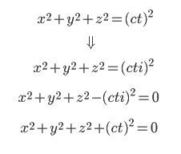

| ４次元思想とフラットランド | |
| 佐道 来夢 | |
| (2016) | |
目次
■はじめに 〜４次元とは何か？〜
この書籍のタイトルは『４次元思想とフラットランド』であるが、まず、『４次元思想』とは、「４次元を追求する思想」のことを言っている。では、「４次元」とは何なのか？４次元というと、かの有名な「ドラえもん」の「４次元ポケット」のイメージが大きいかもしれないが、あの「４次元ポケット」は、『４次元空間』に道具を収納することによって、３次元的な物理法則を無視して無限に道具を収納することができる・・・というＳＦ的な発想から出てきた品物である。今回でいう「４次元」も、基本的にはそうした「４次元空間」のことを言っている。我々が基本的に住んでいる「３次元空間」は、「ｘ，ｙ，ｚ」の三つの軸で構成されているが、「４次元空間」とは、そこにもう一つ軸を加わった空間・・・ということである。
それに対して、「４次元」というと『４次元時空』というものを指す場合もある。これは、かの有名な「アルベルト・アインシュタイン」が、自身の打ち出した理論「相対性理論」の中で用いていた概念であり、これは、「３次元空間」に「時間軸」を加えて「４次元」としたものである。つまり、普通の我々が住んでいる３次元空間とほとんど変わらないものと言って良い。今回扱う「４次元」とは、この「４次元時空」ではなく、「４次元空間」であることを、まず押さえてもらいたい。
17世紀以降、西洋では数学が著しく発展していったが、そうした中で「４次元」という言葉もたまに使われるようになり、近代の西洋ではその概念について探求する著名人などが出てきて、大いに話題になることがあった。代表的なものとして、19世紀に『エドウィン・アボット・アボット』という人が執筆した『フラットランド多次元の冒険』という著作がある。アボットはイギリスの教育者であり、また、聖職者でもある立場の人だったが、幾何学に対する高い関心もあり、「４次元」で定義される世界について強く惹かれていた人物だった。そこで、『フラットランド』という「２次元の図形の姿をした住人が生息する、２次元平面の世界」という架空の世界を作り、そこから「２次元の住人」にとっての「３次元の世界」をイメージすることによって、「４次元の世界」への展望を思い描いた。そのような発想からアボットの執筆した著作は、後に「４次元」を探求する人達に大きな影響を与えた。本書の前半の「４次元思想とフラットランド」の章では、まず、アボットの著作「フラットランド多次元の冒険」についてを中心に扱い、そこから「４次元」について述べていく。
そして、後半の「４次元思想とヌーソロジー」の章では、『半田広宣』という人の提唱した『ヌーソロジー』という宇宙論について紹介しつつ、それと「４次元」とが関わっている部分を中心に書いていく。「ヌーソロジー」とは何か？ということについては、詳しくは後半の冒頭の章にて取り上げるが、それは、１９９５年頃から立ち上がってきたものであり、哲学に科学に物理学に数学、さらには、神秘主義といったオカルトめいたものまで包括している宇宙論・・・のようなものと言うことができる。そして、「４次元」に関することもその対象範囲となっているため、それについて深く掘り下げることもできる。そこではどういう風に４次元が扱われているか？また、どういう方法で４次元を導くことができるか？本書の後半ではそういったことを扱っていく。
本書のメインテーマである「４次元」という概念は、人間にとっては「異世界」とも解釈することができるものだと思う。実に抽象的なものであるが、人間の意識や精神とも関わりのあるものだと思う。そして、「次元」という概念や、「ｘ，ｙ，ｚ」といった「軸」を用いてそれを説明することにより、いくらか数学的にそれを記述したり、説明したりすることができる。また、「４次元」という「異世界」は、人間の無意識の世界とも通じており、それを探求することは、自分の本性である個性を持った「自己（セルフ）」を発見することにも繋がっている。
従って、「４次元思想」とは、精神的なものと数学的なものとを繋ぐ思想であると思う。
■４次元空間に関する一般見解
・４つめの軸
まずは「次元」の定義を確認し、そこから導き出せる簡単な「４次元」の概要について説明する。
まず、「次元」とは何か？それは「軸の数で決まるもの」である。次の図を参照してもらうと簡単であるが、軸の数が一本だと１次元、軸の数が二本だと２次元、軸の数が三本だと３次元・・・となる。
そして、それぞれ、１次元には「線」が、２次元には「面」が、３次元には「立体」が存在している。４次元は、３次元に加えて「軸」が一本追加された次元ということになる。付け加えるなら、こうした次元の法則において、新しい軸は、既存の軸の「垂直方向」に存在しているため、「４次元目の軸」というのも、３次元の軸の「垂直方向」に存在していると導き出すことができる。
・観察の法則
続けて、次元における「観察の法則」について説明する。これも次の図を参照してもらえば分かると思うが、「観察している次元」というのは、「観察されている次元」よりも一つ上に存在している。
例えば、点（０次元）を観察しているの線（１次元）の次元であり、線（１次元）を観察しているのは面（２次元）の次元であり、面（２次元）を観察しているのは立体（３次元）の次元である・・・となっている。
この法則から推測すると、立体（３次元）を観察しているのは「４次元」ということになる。つまり、「４次元」を発見するには、「３次元を観察している次元」を発見すれば良いということになる。果たしてそれは一体どこにあるのか？
ここでは、この問題については問いかけのみとしておき、先に進めようと思う。
・切断の法則
続いて、「切断の法則」という次元アナロジーの話だが、ある次元を切断した時に出来る「場」は、その次元よりも一つ下となっている。次の図を参照して欲しい。
線（１次元）を切断すると点（０次元）が、面（２次元）を切断すると線（１次元）が、立体（３次元）を切断すると面（２次元）が出来上がる。
このロジックでいくと、４次元を切断すると、立体（３次元）が出来上がることになる。つまり、我々が今住んでいるこの３次元空間は、４次元を切断した時に出来た場・・・と言うことができる。
・４次元立方体とその展開図
次に４次元に存在する立方体・・・「４次元立方体」と呼ばれるものを説明する。まず、２次元にある「正方形」と、３次元にある「立方体」の特徴は、それぞれ以下のようになっている。
２次元（正方形）
辺の数：４ 点の数：４
３次元（立方体）
辺の数：12 点の数：８
そこから推測するに、４次元の立方体は以下のようになる。
４次元立方体
辺の数：32 点の数：16
ここから考案されたのが「４次元立方体」と呼ばれるもので、それは次の図のような形をしている。
そしてそれは、内と外がひっくり返るように動いているのである。「４次元立方体」は別名『正八胞体』とも呼ばれ、これが動いている姿は、ネットで「正八胞体」と検索するとすぐに出てくるので、気になった人は調べてみると良い。
次に、「４次元立方体」の展開図の話である。
また、先ほどと似たような話であるが、３次元（立体）の展開図は２次元（平面）となっている。同じ理屈で、４次元立方体の展開図は、３次元（立体）のハズである。そこから考え出された形が、次の図のようになる。
・４次元はどこにあるのか？
以上、４次元をアナロジー的に理解するための例をいくつか出してきた。しかし、問題は「４次元はどこにあるのか？」と「どうすればそれが見られるのか？」であると思う。
結局、その答えを出せる人がなかなかいないというのが、この問題の実状であると思う。この書籍の後半にて、その点については明らかにしていくつもりだが、ここでは、ひとまずは問いかけだけとしておく。
次の章では、この問いかけに対して挑んだ人物、「エドウィン・アボット・アボット」と、その著作「フラットランド多次元の冒険」について述べていく。
＊＊４次元思想とフラットランド＊＊
■４次元思想の歴史を軽く
・４次元思想の発端とピーク
「４次元」という言葉が初めに使われたのはいつ頃なのか？17世紀に「ヘンリー・モア」という哲学者・神学者が、霊魂を説明するにおいて「４次元」という概念を使ったという話がある。ヘンリー・モアは、プラトン主義の哲学者であったため、プラトンの「イデア」を探求する上でこうした概念に触れていたが、その一方で神学者であったため、キリスト教の影響も受けている。キリスト教圏において「異世界」のような概念が出てくる時は、大体、キリスト教で言われている「神の国」のようなものの影響を受けている。４次元の思想や数学の発展が主流となっているのは西洋であり、西洋といったらキリスト教であるため、必然的にキリスト教との関わりの中でこうしたものが出てくることが多い。
４次元思想が本格的に流行り出して来たのは19世紀頃の話である。19世紀のヨーロッパは、なかなか特徴的な時代であり、産業革命による科学技術の発展がピークに達していて、「近代理性」と呼ばれるものが至上となっていた時代である。科学技術の素晴らしさや、唯物論的な価値観がもてはやされていた時代であるが、同時に、その弊害も出てきた時代でもあり、「近代理性」に対するアンチテーゼが同様に出てきて、それが「神秘主義」であったり、自然科学と違う視点から見た学問であったりと、「反近代理性」に該当するものが立ち上がってきた時代だった。
４次元思想も、19世紀のそうした潮流の中で流行っていくことになった。今回のメインとなる人物、「エドウィン・アボット・アボット（教育者・聖職者）」を始めとして、「チャールズ・ハワード・ヒントン（数学者）」、「ビョートル・ウスペンスキー（神秘思想家）」、「クロード・ブラグドン（神秘思想家）」・・・等の人物が出てきており、「エドウィン・アボット・アボット」→「チャールズ・ヒントン」→「ビョートル・ウスペンスキー」とそれぞれ影響を受けている。「ビョートル・ウスペンスキー」の著作では『ターシャム・オルガヌム(第三の思考規範)』というのが有名だが、ウスペンスキーの本を「クロード・ブラグドン」がアメリカへ翻訳し、アメリカで４次元思想が流行り、その影響が日本に来ることもあった。
数学・物理学の界隈でも、４次元については話題になっていたようである。先に上げた「チャールズ・ハワード・ヒントン」は、数学者として大いに活躍していた。
・アインシュタインの登場
こうして発展していった４次元思想だが、20世紀になり、かの有名な「アルベルト・アインシュタイン」が登場することにより、一旦の結論が出ることになる。
アインシュタインの偉業としては、「相対性理論」の発表があるが、そのうちの『特殊相対性理論』において、アインシュタインは「時間」の考え方を拡張し、その中で「４次元目の軸は『時間』である」と捉えるように記述していた。これによって数学や物理学の世界では、４次元とは、時間軸が４次元目の軸となった「４次元時空」（これは、「ミンコフスキー時空」とも呼ばれる。）であるという結論が出てしまって、４次元に関する探求はそこで終わりになってしまった。
しかし、アインシュタインのもたらしたものは、必ずしも「４次元時空」という唯物論的な見方一辺倒の方向にあるわけではない。アインシュタインの特殊相対論の考え方として、「光速度」を考慮して物体の動きを捉えると、時間と空間は相関性を持つようになるという考え方があるが、これは考え方次第では、「４次元空間」を捉えることにも応用することもできる。この辺りは、この書籍の後半の章にて説明していくことにする。
それから、20世紀に入ってから数学・物理学界隈で起きたことというと、「量子力学」や「量子論」の誕生がある。これまでは、物質を構成する「原子」は、単純に「粒」のように振舞うものだと信じられていたが、「原子」の元を構成する「素粒子」の動きを解明してみると、それは従来の物理法則では考えられないようなものだということが分かってしまった。この「素粒子」の不可解な動きを説明するために「量子論」というのが登場してくるが、アインシュタインは量子論の考え方には否定的な立場だった。しかし、同時にアインシュタインの出した「光粒子仮説」という説が、量子論の発展の引き金になったりもしたという、なんとも微妙な状況が起きていた。
現代では、主流として「４次元」とは「４次元時空」のことであるという結論が出てしまったものの、量子論の不可解さというものが、数学・物理学の世界では残り続けている。そうした中で、下火となりながらも、「空間」や「物質」の謎に挑むべく、「４次元空間」の存在を探求する者もいる状況ではないか？と思う。
■アボットの遺産「フラットランド 多次元の冒険」
・アボットの人物像
さて、話を19世紀に戻すが、この章では、「エドウィン・アボット・アボット」の書いた「フラットランド多次元の冒険」という著作の内容を中心に書いていく。
まず、エドウィン・アボット・アボットとはどんな人物なのか？
アボットの生まれは１８３８年であり、古典の分野でも優秀な成績を修めながらも、１８６３年にイギリス国教会の司祭として選ばれている。また、主に関心があったのは教育の分野であり、その生涯のほとんどを教師として過ごした。１８６２年に初めて教壇に立ち、１８６５年には、自信の母校であるシティ・オブ・ロンドン・スクールの校長を勤めることになった。自分より年上の人間がはるかに多い中でも、その学校の著名な校長となり、１８８９年に至るまで校長としてとどまり続けた。その教師としての卓越さは評判であり、他校からのスカウトも多数来ていたらしい。
それから、アボットは、宗教改革者としての一面も持っていて、イギリス国教会の「広教会派」のメンバーであった。イギリス国教会には他にも、「高教会派」（カトリック的な儀式要素を重視する一派）や「低教会派」（プロテスタンティズムに近い）というのがあったが、「広教会派」はそれらと対立する宗派であり、キリスト教的な傾向を持つ社会民主主義に繋がっていた。
１８７０年代、アボットは、自身の受け持つ学校が、古く手狭になってきて、学校移転の必要性が出てきたという問題を抱えることになる。これが原因で学校移転を巡る長い消耗戦が始まることとなったが、この大変な時期を過ごしていく中、アボットの天職は著作業であるという確信が出てきて、１８７１年に著作を刊行し始めたらしい。そして、50もの著作が書かれていく中、１８８４年の夏に書かれていたらしい著作が「フラットランド多次元の冒険」である。
この「フラットランド多次元の冒険」は、２次元と３次元の世界から、「４次元」の可能性を問いかける本でありながら、アボット自身の思想も色濃く出ており、その当時のイギリスの社会問題を風刺した「風刺小説」だとも言われている。アボットが誠実な「教育者」であり「聖職者」でもあり、イギリスの階級社会を生きてきた人間だということを踏まえて読むと、その内容の意図がよく分かるようになる。
・「フラットランド 多次元の冒険」の構成
アボットの書いた「フラットランド多次元の冒険（Flatland: A Romance of Many Dimensions）」の日本語版として出ているもので、日経BP社の「フラットランド多次元の冒険」がある（本書ではこれを参照している）。これは、アボットが書いた原稿に「イアン・スチュアート」（１９４５年〜）という数学者の人が注釈をつけ、富永星という人が翻訳をやっている・・・というものである。
本の構成としては「①イアンの書いた序文」→「②アボット本人の書いた中身＋イアンの付けた注釈」→「③イアンの書いた付録」というようになっている。
まず、「①イアンの書いた序文」は、アボットの生い立ちや、19世紀の４次元事情などが書いてある。メインは②の箇所であり、ここにアボット本人が書いた書籍の内容が載っており、そこにイアンの注釈が付け加えてある。最後にある「③イアンの書いた付録」は、本編を補足するように、イアンが考える４次元というテーマで、主に数学についての話が書いてある。
「フラットランド多次元の冒険」の日本語版は、現在絶版となってしまっている（※）。そのため、その内容を知るのがなかなか困難ということもあるので、本書でその内容を紹介していこうと思う。
※本書で参照した、日経BP社の日本語翻訳版（イアン・スチュアートが注釈を付けたもの）や、その他の日本語翻訳版が、現在絶版となっているが、最近（２０１６年頃）になって、日本語版のKindle書籍が登場したようである。従って、興味を持った方は、そちらの書籍なら簡単に入手することができる。
・「フラットランド 多次元の冒険」の内容
アボットの書いた書籍「フラットランド多次元の冒険」は、平面で構成されている世界『フラットランド』が主な舞台である。そして、主人公はフラットランドの住人『スクエア』氏である。スクエア氏の形は「Square」・・・つまり、「正方形」である。そして、フラットランドには、この「スクエア」だけでなく、様々な図形・・・三角形や多角形や線、限りなく円に近い多角形などの住人が生息している。次に描いたような図形が住人として住む、平面の世界をイメージして欲しい。
この「フラットランド」は、ご覧の通り平面の世界なので、「高さ」という次元が無かったりする。「横」や「縦」には避けることができるが、「高さ」方向には避けることができない。ここの住人にとって「上」とは「北」のことしか指さない。ｙ軸が「北」になっており、ｚ軸というものが存在しない。簡単に想像できる通り、少し窮屈そうな世界である。
それから、住人がみんな図形であり、角がとがってる場合には、ぶつかると傷がついたりするらしい。色々と大変な世界である。
この２次元世界である「フラットランド」に対して、３次元世界は『スペースランド』と呼ばれている。これは早い話、我々が住んでる世界と同様の世界である。物語の後半にて、「スクエア」氏はそちら側の世界に行くことになったりする。
この物語は、「スクエア」氏が我々に対して語りかけるように始まっていくが、前半部の内容は、まず「フラットランドの特徴」の話である。平面と図形しかない世界ではどんな奇妙なことが起きているか、確かに窮屈そうな所であるが、どのような場所なのかについての記述である。そして、後半部の内容は、「スクエア」氏が『スフィア』氏に出会い、「スペースランド」へ行く話になる。このスフィア氏の形は「Sphere」・・・つまり、本来は「球」の形をしている、「スペースランド」の住人だが、「スペースランド」にいる「球」が「フラットランド」に入り込むことにより、「円」の姿をして登場する。スクエア氏は、スフィア氏との出会いによって、自分達より高次元の世界（我々にとっては当然の世界でもある３次元）を垣間見ることになる。
つまり、言ってしまうと、これは「４次元を知るストーリー」というよりかは、「２次元の者が３次元の世界に行くストーリー」なのであるが、アボットのこの作品の目的は「４次元」を描くことにある。従って、「２次元の者が３次元の世界に行く」ことで「３次元の者が４次元の世界に行く」ことが、少しでも分かるように書かれている。ここで登場するスクエア氏は、３次元空間である「スペースランド」に行った際に、「４次元」に関しても言及することになる。こうした事象を通じて、アボットは「４次元」の世界を何とか表現しようとしていたのである。
■フラットランドの特徴的な所
ここから、「フラットランド多次元の冒険」の前半部に書いてある、フラットランドの特徴的な所を述べていく。先ほど述べた通り、フラットランドは平面図形の住人しかいない世界であり、建造物や道具なんかもすべて平面図形になっている。（作中では道具や作物に関する記述はあまりなかったが・・・）
それから、一番重要な所としては、フラットランドの社会は、非常に厳格な「階級社会」という所である。その為、原作では、いくらかえげつない階級社会的な決まりや、革命の描写などが色々と書かれている。（なお、それらの記述については、本書ではいくらか省略して書くことにする。）
物語の前半では、こうしたフラットランドの特徴について書かれているわけだが、どういった特徴を持っているのかについて、全体の様子が分かるように特徴的な所を述べていこうと思う。
・「辛抱強くあれ、世界は広大無辺なのだから」
まず、「フラットランド」の話が出てくる前にタイトルとして冒頭に載っている言葉に「辛抱強くあれ、世界は広大無辺なのだから」というのがある。これは、かの有名な16世紀の詩人「シェイクスピア」の「ロミオとジュリエット」の台詞らしい。アボットはシェイクスピアの研究家としても名高いぐらい、シェイクスピアとは関わりが深い人物だったという。
アボットの設定した世界である「フラットランド」は、19世紀当時のヨーロッパ・・・しかもその中心ともいえるイギリスのヴィクトリア朝時代を比喩して表現しているような世界でもある。この作品は「風刺小説」とも言われているが、まさしくその通りであり、当時のイギリスを斜めに見るかのように、フラットランドについて語られている。
フラットランドにおける社会も、まさしく当時のイギリスと同様であるのか、かなり厳格な階級構造を持っている側面があり、たくましさが無いと生きていけないのだろうと思えるぐらいである。冒頭の「辛抱強くあれ〜」の台詞も、フラットランドに対して向けているかのようで、人間の世界に対しても向けているかのようである。ここの所は、詩人としての表現を好む、アボットの性格がよく表れている。
・角がとがってると人が死ぬ
とりあえず、フラットランドの特徴の話である。まずはこれ。「角がとがってると人が死ぬ」である。フィクションならではの殺伐演出であり、フィクションだから何でもありというノリのようである。フィクションノリの風刺小説である「フラットランド多次元の冒険」は、殺伐とした話が結構多い。
住人が「図形」となっている世界では、普通に過ごしてても、うっかりのミスでぶつかって致命傷に・・・みたいなことがあるみたいである。もっとも、事故が起きた時にいくらか傷がつくから危ないレベルのものは正方形に正三角形ぐらいであり、それより鋭利な角度となると、より危険性が増すことになるらしい。従って、フラットランドの住人達は、基本的に角の扱いに関しては細心の注意を払っているのである。
このように、とがった角には危険性があるため、フラットランドの住居は「五角形」以上とするように法律で定められているらしい。正方形の家も昔は存在していたが、ぶつかった時になるべく安全な角度となると「五角形」（つまり１０８度）以上らしい。ちなみに、ここで「五角形」と言っているのは、基本的には正五角形のことである。
こうした社会において単純に「強さを持っている」のは「鋭利な二等辺三角形」ということになる。何故ならば、その気になれば簡単に他人を傷つけることができるからである。従って、この世界で二等辺三角形は、兵士や軍人、それから労働者のようなポジションにあたるらしい。しかし、これらの役職は「有利」で「強い」わけだが、決して「偉い」というわけではない。作中でも二等辺三角形に関しては、「低級な二等辺三角形の階級は・・・」のように表現されることがあり、総じて「低級な労働者・兵士・軍人」に該当するのが、フラットランドにおける「二等辺三角形」である（より、鋭利な角度を持つ者ほど、兵士向きと言える）。二等辺三角形が有利なのはあくまで「武力」の問題であって、フラットランドはそれよりも「知性」や「理解力」といったものが重要視される世界であり、こうした知性は「多角形」の方がより多く持っているからである。これについては後ほど述べていく。
そして、「武力」として最強のものを持っているのが「線」であるが、この世界で「線」はかなり特別なポジションとなっている。これについては次の項目にて述べる。
・ご婦人の扱い方は丁重に
さて、フラットランドの大きな特徴として、この世界での「ご婦人」は「線」に該当する。言い換えるなら、「女性」のことを言っている。
「線」は、「二等辺三角形」と比べものにならないぐらい、即死の鋭さを持っている。この世界の衝突事故で死傷の原因になるのは、ほとんどこの「線」によるものである。従って、ご婦人には強くマナーが課せられている。つまり、フラットランドでは、ご婦人（もとい女性）は「線」であり、危険な「線」であるが故に、マナーを強く守ることになっている存在・・・ということになる。
・・・女性が兵士よりも強いというのはよく分からない表現であるが、何かヒステリーのような強さのことを言っているのだろうか？この辺りはアボットの特徴的な思想が読み取れる。
また、「線」であるということは、他にも重要な要素がある。これについては、次の項目で述べる「知性」や「階級」の問題が絡んでいる。
・階級社会のような構造
フラットランドの大きな特徴として「角の数が多い程偉い」というのがある。「角の数が多くなる」ということは、三角形→四角形→五角形→・・・と上がっていくということであるが、それが多い程、「階級が上」という扱いになり、「知性」を持っているかのような扱いにも近くなる。（しかし、「階級は上」であるが「優れているか否か」ということに関しては、また別問題である。）
ここで、それぞれの角を持つ図形について説明しておこう。「二等辺三角形」は「低級な労働者・兵士」だと先ほど述べたが、「正三角形」は「商人」や「中産階級」にあたる。次に、主人公スクエア氏の立場である「正方形」と、それから「正五角形」は、「専門家」や「紳士階級」の立場である。そこから先の「正六角形」以上からが「貴族」の階級にあたる。その中で名誉ある階級が「正多角形」と呼ばれ、角の数が多いほど階級が高い。つまり、フラットランドは、アボットのいた当時のイギリスと同様、完璧な貴族社会なのである。
それから、フラットランドにおいて優秀か否かを示すパラメーターとして、「整っているか否」かというのがある。フラットランドの住人は、二等辺三角形を除くと、基本的には、正方形や正五角形、正多角形といった、「正〜」の形をしているが、ごく正確にみると少し歪んでいるのが普通のようであり、優秀なものはより完璧な形に近いようである。主人公の「スクエア」氏が「正方形」という、下から見るとそこまででもない階級なのにもかかわらず、そこそこ優秀な立場にいるのも、かなり完璧に近い「正方形」だからである。
それから、「極めて円に近い多角形」というのがいて、それが「聖職者」にあたるらしい。具体的には、「聖職者」とは百とか二百とか、それ以上の角度を持っている者のことである。（本書でこれを図示する際は、「円」と区別しやすいように、もう少し抑えた角数で描画している。）
「聖職者」は、フラットランドにおいて極めて重要な知識を受け継いで持っている他、一方で「自分が円だと言いはる立場」だという風にも書かれている。「円」になると完全なる「神の使い」ということになるわけである。アボット自身も聖職者との関わりがある立場の人物であったが、この辺りは貴族と聖職者の関係について思うことがあっての設定だと思う。
この世界での「円（つまり聖職者）」の教えに、「汝の形に常に関心を払え」というのがある。それほどまでに、「角の数」や「形」が生涯に渡って重要な要素として扱われている。
そして、フラットランドにおけるこうした「角の数」は、生まれ持った状態から変わることはない、ということになっている。実に情け容赦ない階級制度であるが、アボットはそういう設定をしている。
フラットランドのこうした特徴は、当時のヴィクトリア朝のイギリスを表現しており、そこは、それぞれの人物が生まれ持った出自・役職で、あらゆる運命が決まってしまうようなものであったらしい。「フラットランド多次元の冒険」が「風刺小説」と言われているのも、アボットがその当時の英国社会を面白おかしく描いているからである。
・角の数を判別する方法
ここで、そもそも、フラットランドの住人は「角の数をどうやって判別しているのか？」について説明していく。
まず、「スクエア」氏が、隣にいる正五角形を見ている姿を想像して欲しい。
「スクエア」氏はこの時、正五角形がどのように見えているのか。
これを想像できるだろうか？
・・・答えは、「線」である。
これは、「スペースランド（３次元空間のこと）」に住んでいる我々の視野も、ある意味「平面」として捉えることができるのと同様だと思う。我々は、これまで生きている間につちかってきた経験から、見えている景色を「立体」と捉えることができる。これは、フラットランドの住人も同様である。
フラットランドの住人による角の数の判別方法は全部で三つあり、それは、それぞれ「聴覚」と「触覚」と「視覚」を使うものである。
まず、「聴覚」を使った判別方法についてだが、フラットランドにおいて、住人の一人一人の声は違うものであり、また、その声の質に角度の数というのも表れるらしい。ここでは、「三角形」「四角形」「五角形」までは、比較的簡単に判別することができる。しかし、それ以上となると、どうも「声の質」というのが似てくるようになり、判別が難しくなるという制約があるらしい。また、貴族階級となると、声による判別の機能が上手く発達していないらしい。それから、二等辺三角形が貴族階級の声を出すという「声マネ」というのが容易に出来てしまうという、困ったことも起きてしまうらしい。従って、「触覚」や「視覚」を使った判別方法が主に使われるようになっている。
次に、「触覚」を使った判別方法であるが、例えば、スクエア氏が正五角形氏に触った場合、一つの角度が「１０８度」であるということが分かる。というか、フラットランドの住人は、それが分かるように教育されているらしい。そこから、正五角形という全体の形を推測するのである。
次に、「視覚」を使った判別方法であるが、これは、「光影」を見ることによって判別する。フラットランドには、うまい具合に霧がかかっているらしく、近い場所と遠い場所とを区別することができる。従って、スクエア氏が五角形を見た場合、次のようにグラディエーションがかかって見えている。
ここで、一方向から見た場合の角の数と、角の急具合が分かるのである。こうした視覚内容から推測することによって、角の数を判別することができる。
そして、このような視覚認識に関する学識に特に長けているのが「多角形」であるらしい。というのも、多角形は、前に述べた「触覚」を使った判別方法は低級ということで使わないらしい。「視覚」による判別がメインとなり、それによる判別能力が熟達している。従って、階級が高い多角形は、そうした類の「知性」をよく持っており、こうした幾何学の知識に精通しているのが、フラットランドの貴族階級の特徴なのである。
・ご婦人の知性の問題
さて、こうした「知性」が重要視される世界において、ご婦人はかなり特殊なポジションにいる。角が多い程に知性が高いとしたら、ご婦人である「線」はほとんど知性がないとも解釈できる。これは、ご婦人の知性は全くもって最低級ということだろうか？むしろ、ほとんど論外な扱いということだろうか？
これについては色々と考察できる所であり、まず、重要な点として、19世紀当時のヨーロッパの近代理性至上主義が上げられる。19世紀のヨーロッパというと、産業革命によって科学技術の水準が上がっていく真っ最中であった。科学技術の発展が全体的に右肩上がりであったため、どこの国も産業を発展させるものだから、自国も負けじと産業の発展を望むことが国家事業であったわけである。当時の科学力は、そのまま「軍事力」にも直結していたため、その問題は、国家にとって死活問題でもあった。こうした状況から、あの第一次世界大戦へと発展していくことになるのだが・・・
こうした状況の中、ヨーロッパでは、「科学」こそが人間のあらゆることを解明してくれて、あらゆる問題をも解決してくれると信じられていたし、そうした科学技術や産業発展に結びつくような知性である「近代理性」が至上かのようにもてはやされていた。特に、アボットのいたイギリスなんかはその発祥の国である。そして、この「近代理性」の扱いに長けていない女性の扱いは、良いものではないことも、容易に想像できるわけである。
アボットはそんな中で、婦女子教育を重要視しており、教育者として活動する中で、婦女子教育についてもよく考えていたようである。「フラットランド」における、ご婦人や婦女子の扱いの問題については、アボットの婦女子教育の考え方が避けて通れない。スクエア氏も「フラットランド」において、ご婦人に対して言及する際、「婦女子教育の再考を望む」というように言っている。
フラットランドにおける女性は、男性（というかここの場合は多角形）ほど、明確に分かる表面的な知性の差があるわけではないが、何かしらの知性のような能力には差があるらしい。主人公スクエア氏の妻なんかは「並のご婦人方よりはるかに常識のある」などと表現をされている箇所がある。男性が持ってる知性とは明らかに違うものだが、その能力は重要視していたということだと思う。
なんにせよ、この辺りのフラットランドの特徴は、当時のヨーロッパのイメージが当てはまっている所であり、もし、これを現代日本のイメージと照らし合わせる場合は、また別問題な所である。
・一世代上がると角の数が増える
それから、フラットランドの特徴として「子供になると角の数が一つ増える」というのがある。主人公スクエア氏（四角形）の子供の場合は「五角形」、孫の場合は「六角形」である。つまり、子供はより高い位が望めるシステムであり、世代が増えるごとに階級が上がっていく。
しかし、この法則には例外がある。まず、「二等辺三角形」の子供は、なかなか階級が上がらないとのことである。どういうわけか、二等辺三角形の場合は簡単には角の数が増えず、代わりに「２辺の数が縮んでいく」ようになるらしい。そうした中で、ある段階に達すると「正三角形」になることがあり、中産階級と言われる「正三角形」になると初めて、「次の世代では角の数が増える」という希望が持てるようになる。なんとも哀れな世界をアボットは描いている。
それから、もう一つ例外がある。角の数が百とか二百とか、三百とか四百の「聖職者」階級の場合はどうなのか？その場合は逆に、「一つ世代が増えると五十とか増える」という法則になるらしい。その中で個人差はあるみたいである。ただ、「聖職者」の場合は、代わりに「子供があまり出来ない」という法則があるらしく、そういう制約でバランスが取れているらしい。
こうした「子供になると角の数が増える」という法則に関して、アボットはどういうことを言いたかったのであろうか？子供の方が賢く、階級も高く、可能性のある存在ということだろうか？フラットランドでは「子供は敬って育てる」という特徴があるらしいが、それについて言いたかったのかもしれない。
・角が不規則なのは障害者扱い
フラットランドには「整っているほど優秀」という特徴がある。正方形や正三角形は特に問題はなく生活できる立場であり、二等辺三角形あたりは、低級な扱いはされるものの、労働者や兵士として振る舞うことはできるということになる。というか、フラットランドの住人は、基本的にほとんどは２辺以上が整っているように出来ていて、そうでないケースはまれに発生するぐらいであるらしい。しかし、そうしたまれなケースも発生し、不規則な図形が生まれることもあるようである。
では、不規則な図形、特に、角度と辺の長さがそれぞれ違う三角形などはどうなのだろうか？
フラットランドでは「不規則な図形」は完全に「問題児」とか「厄介者」の扱いであり、場合によっては、施設か何か幽閉された場所でした過ごすことしかできない扱いになるらしい。
これは恐らく、発達障害か知的障害か、西洋社会における「障害者」の扱いについて述べているのではないか？と思う。階級制度の厳しい当時のイギリスであるが、ここで言う「不規則な図形」にあたる人物というのも少なからずいて、それについて述べているのだと思う。そうした者は、教育によっていくらかの改善はできるものの、抜本的な改善は期待できないらしい。この辺りも、アボットの当時の考えが表れている所だと思う。
・「落ちこぼれ」の多角形の扱い
次に紹介するフラットランドの特徴は、「多角形が落ちこぼれる場合」に起きるケースである。
厳しい階級社会であるフラットランドでは、当然、そこそこの多角形の立場にある者達は、優秀な立場や役職につくために努力をしていき、ゆくゆくは「大学の最終試験」なるものを突破するようになり、ほとんどの者は、そこに受かるようになっている。
しかし、まれに失敗するケースがあり、そうした者は、公職の道は閉ざされるようになり、職人のように何か技術を持っているわけでもなく、商人のように快活なコミュニケーションが得意なわけでもなく、縁もなくどこの職業からも外れてしまう・・・という不遇な状況になってしまうという。
そして、フラットランドで起きたこれまでの争乱や革命のリーダーとなっているのは、多くの場合は、そうした多角形であったらしい。そもそも、こうしたフラットランドのように階級制度が厳しい世界において、二等辺三角形や不規則図形のような「低階級」なるものが存在し、そうした者達が社会に不満を持たないわけがない。しかし、そうした者達は「知性」や、高い統率能力といったものがない場合は、大きな騒動を起こすには至らない・・・しかし、そこにもし、多角形のように「知性」を持ったリーダーというのが出てきたら、そこを革命の火種の中心としてまとまってしまうわけである。
従って、「フラットランド」において、大学に最終試験に落ちた者は、生涯にわたって幽閉するか、苦痛をともなわない形で死刑にするか・・・などという法律を作るべきだと考える者までいるという。（これもまた、フラットランドを用いた、アボット特有の社会風刺である。）
■「ラインランド」という場所
さて、「フラットランド多次元の冒険」の話は、後半部になると「スフィア氏との出会いとスペースランドへの参入」の話になるが、その前にスクエア氏は『ラインランド』という場所にも迷い込み、ラインランドの王と対話をするという話がある。
この「ラインランド」とは何なのか？これは単純な話であり、２次元の「フラットランド」より次元が１つ下である「１次元」の世界の話である。つまり、「線」の形をした世界である。
１次元の「線」の世界である「ラインランド」では、「短線」が「男」で、「点」が「女」である。そして、その場で生まれたら、もう、そこから誰かと誰かの間を通過することができないので、基本はその場にとどまるぐらいしかやることがない・・・という世界である。スクエア氏はこれに対して、なんとわびしい世界なのか、と思って声をかけたが、それに対し、ラインランドの王は「妻と子どもも満ち足りておる」と言うような、そんなやり取りがある。
そうした世界では「音」が重要な要素となるらしい。ここの話も一つ、面白いエピソードとなっているが、それは本書ではひとまず置いておくことにする。
■スフィア氏と出会う話
・スフィア氏の登場
さて、いよいよ「フラットランド多次元の冒険」において、物語の本題とも言える「スフィア氏との出会い」の話である。ここで言うスフィア氏とは何なのか？前にも述べたが、「スフィア」とは「Sphere」・・・つまり、「球」のことであり、それは３次元立体の世界・・・ここでいう「スペースランド」にいる住人なのであるが、それが「フラットランド」へと降り立つことになったのである。
スフィア氏は何を目的として「フラットランド」に来たのか？どうも、自分たちのいる世界「スペースランド」の存在についてを、「フラットランド」の世界に伝えるために来たらしい。それで、たまたま選ばれたのがスクエア氏であったため、スクエア氏にメッセージを伝えに来たという様子であった。
さて、「球」の形をしているスフィア氏は当然、フラットランドでは「球」としての姿を見せることができない。では、どのように見えているのか？それは、次の図のように、球の断面が見えていたのである。球の断面は、何になるかというと、「円」である。
前に説明した「切断の法則」を復習すると、２次元において３次元とは、その姿の断面しか捉えることができないのである。
スクエア氏がスフィア氏に出会い、その形が分かった時は、「ここまで完璧な円は見たことがない」という感想を抱く。フラットランドにて「円」とは「聖職者」であるはずだが、厳密には多角形であるからである。スクエア氏はスフィア氏に敬意を払って話を聞くが、「スペースランドから来た」と言うスフィア氏に対して、「スペースランドとは何か？」という問答になる。「スペースランド」には「高さ」がある・・・とスフィア氏は説明するが、スクエア氏は「高さ」が何のことなのか分からない。そんなものは存在しないので、スフィア氏の「スペースランド」の説明を聞くが、何がなんだか分からない。まずは、そういうシーンからスタートする。

・スクエア氏の驚き
スフィア氏は「スペースランドには高さがある」といった説明をするが、スクエア氏は一向に「高さ」の次元というものを理解しない。従って、そんなものはないと言い張る。まずはそういうスタートであった。
説明に困ったスフィア氏は、ちょっとした術を使い、その後に、３次元空間のアナロジーについて説明することにした。
まずは単純に、①ｚ軸（高さの次元）に移動し、②またｚ軸から戻る、という動作である。これは、スクエア氏にとっては、①目の前の円がだんだんと小さくなって消える、②それから、まただんだんと大きくなって表れる、という風に見える。俗にいう「テレポート」のような時空間移動ということになるだろう。
これを実際にやって見せて、どのような仕組みでその動作が行われたかという、「高さ」の次元とそのアナロジーを説明したスフィア氏だが、スクエア氏は一向に納得してくれない。次にスフィア氏は以下のようなことをした。
まずは、①ｚ軸に移動して消失し、②近くの戸棚の中にある帳簿を取り出し、③それを持って再び現れる・・・ということを実際にやって見せた。先の図で描いた通りだが、スペースランドの住人にとっては、フラットランドの世界は手に取るように見えているため、このようなことも自在に可能なのである。「テレポート」による時空間移動と、空間把握と物質移動の複合技ということになる。
こうした出来事は、スクエア氏から見たら、目の前の人物が急にどんどん小さくなって、最後には消えていたり、またどんどん大きくなって現れたり、何故か家の間取りを全て把握されていたり・・・帳簿が消えたり現れたり・・・という事態である。
さらには、スフィア氏は消えたまま、スクエア氏の腹（というか内部、内蔵？）をつついてみたりもした。
このことに怒りを露わにしたスクエア氏は、スフィア氏のことを「一介の魔術師のごとき気まぐれな訪問」というように形容し、とうとう腹を据えかねて、自分の持ってる角度（もちろん90度である）を突きつけて、スフィア氏を壁へと押さえつけ、助けを呼ぶことにした。
スフィア氏は、これに対し「こんなことがあってよいのだろうか。」というように動揺した。スフィア氏はしっかりと押さえつけられている状態となっているが、もし、このまま自身がスペースランドに引き上がると、スクエア氏までそこに引き上げられることになるのである。スフィア氏はスクエア氏に対して放すように言うが、スクエア氏は一向に聞く耳を持たない。
仕方ないのでスフィア氏は、「それならば、己の運命に向き合うがよい。おまえが暮らす平面から、出るがよい。１、２、３！ ほーれ！」という掛け声で、スクエア氏を「スペースランド」に連れていくことにした。
かくして、「スクエア氏のスペースランド入り」が果たされることになる。
・スペースランド入りとスクエア氏の動揺
さて、無事に？スペースランド入りを果たしたスクエア氏だが、そこで見える光景は、スクエア氏にとっては驚愕のものだった。
見るもの全てが、まるで次元が違うかのように異彩を放っていて（実際に次元が違うのだが・・・）、「線は見えども線ではなく、空間は見えども空間ではない」というような光景であり、始めのうちは恐ろしかったが、次第に感激するようになった。それから、自分が今まで襲いかかっていたスフィア氏を見てみると、今度は完璧な球体に見えていたのだった。それは夢にまでみた理想的な姿だったという。
それから、自分が今まで暮らしていたフラットランドの世界が・・・今までは線にしか見えていなかった世界であったものが・・・平面図形に見えているのだ。これを見て、スクエア氏は「まるで神にでもなった心地がします。」と言ったが、それに対しスフィア氏は「なるほど。となると、我が故郷のスリや凶漢たちも、そちらの賢者からは神と崇められることになるわけだ。」と返したりする。
そして、スフィア氏は語ったりする「人間の能力に優劣をつけて分類することは、わたしの任にあらず。しかしスペースランドでは、善き人々、賢き人々の多くが、理解力よりも愛情に重きを置く。また、そちらで重んじられている円よりも、軽蔑されている直線を大事にする。まぁ、このことについてはもうよかろう。」
このように、スフィア氏はフラットランドに対して「おまえの世界の賢者たちはまちがっている。」と言っていて、フラットランドにおいて「多角形」が持っているような「知性」や「理解力」よりも、むしろ「線」が持っているような「愛情」こそが、スペースランドにおいては大事であるということを主張していた。
・フラットランドでの不穏な動き
続けて、スフィア氏はフラットランドの世界を指さして言った。
「あの建物を知っているか？」
ここでスフィア氏が指さしたのは、フラットランドの世界の建物であり、複雑な多角形で出来ている建造物だった。そこは、スクエア氏のよく知る、フラットランドの国々の中心でもある「総会議場」であった。
ちなみに、フラットランドの世界では、今の時期は丁度、時代の節目、西暦２０００年のような時期であり、千年に一度となる重要な時期だった。
この時期、もっとも地位の高い者達が会議場に集まろうとしていた。そして、この会議にて、前回の会議の議事録を読み上げていたのは・・・なんと、主人公スクエア氏の「弟」だった。弟は、スクエア氏と同様に優秀で完璧な正方形の形を持ち、高等院の書記長を勤めている身分だった。
スクエア氏の弟が読み上げている議事録の内容は、ざっと以下のようなものだった・・・。よこしまな意図を持って自らが啓示を受けたと称する者がいる。それらは、国々に騒乱をもたらす。それらの者が他の者をもそそのかし狂乱させることを公言した時、代表会議は常に次のような判決を下した。各千年期の第一日目には、フラットランドに特別な命令が下される。道を誤ったこれらの者どもをあぶりだし、相手が二等辺三角形であるならば破壊し、正三角形であるならばムチ打ちのうえ収監し、正方形や五角形であるならば地方の精神病院へ送りこみ、それより高い身分であるならば、捕まえてまっすぐに首都に送り、評議会によって検査のうえ判定が下される・・・と。
こうした、驚愕の事態を聞いてしまったスクエア氏に対して、スフィア氏は言った。「おまえにも、自分の運命が分かったはずだ。」と。
それから、スフィア氏は「やがてそのときがくるだろう。その前に、わたしも成すべきことを成し遂げねば。おまえはそこにじっとしておるのだぞ。」と言うなり、フラットランドに飛び込んで、議員の輪の真ん中に降り立った。
フラットランドに降り立ったスフィア氏は、スペースランドの存在を伝えようとし「３次元の地が存在することを宣言しに、ここに参った。」と言った。フラットランドでは、どんどん大きくなる「円」の存在がいきなり出てきて、宣言を行っているように見えた。大勢の若手の議員がこれを見て、恐怖のあまり飛び退いていたが、議会の中で一番偉い「聖職者」は、少しも動じていなかった。早速、その聖職者のリーダーは、その場にいた兵達（二等辺三角形）にスフィア氏を取り押さえるように指示した。兵達は、早々に取り囲んでスフィア氏を捕らえたかと思ったが、スフィア氏はすぐに「高さ」の方向へと移動して消えていった。
当然、その場にいた者達は非常に動揺していたが、聖職者のリーダーが言うには、秘密の記録によると「かつての二度の千年期の始まりにも、同じようなことが起きた。」とのことであった。しかし、極秘事項であるため、他言は無用とした。
そして、聖職者はこの出来事に対し、千年前に記録されていたことと同様に、その内容を国家機密とした。その中で、ここで起きた出来事の一部始終を見ていたスクエア氏の弟は、秘密を守るために「気の毒だが先例の通り」ということで、聖職者の判決によって強制的に終生収監されることになり、「今日のことを口走らぬかぎり、命までは取らずにおいてやる。」などと言われ、一生牢獄に入ることになってしまった。
・再度、スペースランドにて
以上の出来事の一部始終を見ていたスクエア氏は、不幸にも牢に入ることになってしまった弟を見て憂いを感じていた。それに対してスフィア氏は、気を取り直すように言った。
それからまたスクエア氏は、スフィア氏に別の所に連れていかれることになり、今度は「立体」を見せてもらうことになった。スフィア氏は６つの正方形のカードを用意し、それを組み立てて「立方体」を作る。スクエア氏は目の前で、スペースランドの立方体を目にすることになった。
しかし、その立体は、スクエア氏にとっては一見、「平面」に見えた。まだ立体に慣れていないため、光と影による色合いの違いは認識できるけれど、「奥行き」の概念が掴めていないからである。これは、フラットランドの住人が、もし、その世界に慣れていない場合、他の物体をただの「線」として見えてしまうのと同様である。そこで、スクエア氏は、この目の前の物体に「触れる」ことで初めて、それが６つの面と８つの頂点からなる立方体であることを初めて理解した。
さて、これらのスペースランドの「英知」のようなものを触れたスクエア氏は、その感激の度合いが次第に増していくようになるが、その後の展開が面白い。
スクエア氏は、「フラットランドの上にスペースランドがある」ということは、さらにその上があると考えるようになった。スフィア氏はたくさんの「円」が集まった存在で、フラットランドのすべてを見下ろせる・・・ということは、たくさんの「球」が集まった存在で、スペースランドのすべてを見下ろせる世界がある・・・と。つまり、「４次元」の存在について考え始めたのである。そして、アナロジーによって導き出せる「４次元」の世界も推測していた。
スフィア氏を真の聖職者として、神のように崇め始めていたスクエア氏は、２次元から３次元へと連れて行くとの同様に、３次元から４次元へと連れて行ってくれると信じて疑わなかったのである。
しかし、スフィア氏はこれに対し、はっきりと「できない」と言った。それから、第４の次元などありえないとも言った。・・・しかし、スクエア氏がスフィア氏をフラットランドで見た時のように、「人物が消えたり表れたり」という事例は、「スペースランド」においても一応あったらしい。それに関してスフィア氏は「そういう話は聞いている。しかし、それが事実かどうかについては意見が分かれている。」というように言った。
これを聞いたスクエア氏はより白熱することになり、第４の次元の存在をより信じて疑わないようになった。スフィア氏は断り続けるものの、スクエア氏は一向に引き下がらず、更なる神聖な領域と思われる４次元の世界を渇望し続けた。そして、４次元の聖なる世界に行くことができれば、５次元の空間への敷居にたたずむということでもある。さらには６次元、７次元へと・・・！
・・・と、そのようなやり取りを続けていくうちに、次第にスフィア氏は強行手段に出ることになった。スクエア氏の身に、激しい物音と共に衝突が起き、空間を押しやられて下降し、下へ！下へ！下へ！と移動することになった・・・
スクエア氏は、とうとうフラットランドに戻ることになったのである。
再び我に返ったとき、既に平面をはいまわる正方形となっていたスクエア氏だが、その心には、あの超常的な体験と、３次元の更なる次でもある４次元の世界への想いが残されていた。
・スクエア氏の帰還とフラットランドでの苦難
このように、スペースランドでの出来事を体験し、３次元という超常的な存在をこの眼でみて、また戻ってきたスクエア氏は、その内容を維持するべく、頭の中で３次元の立方体を描いたりする・・・描くのは難しいものの「上であって北ではない」という言葉を呪文のように繰り返したりしていた。そんな中、スフィア氏が夢に出てきて、助言を受けることなどもあり、そこで、フラットランドよりさらに次元が２つ下である「点」の世界、「ポイントランド」を見せられることもあった。（これについては、本書では説明を省くことにする。）
このような啓発も受けて、スクエア氏は「３次元の福音」を他の人にも伝えるべく、立ち上がることにした。しかし、フラットランドの状況は、先ほどの総議会での出来事もあり、あまり良い状況ではなかった。例の「人を惑わす勢力」への取り締まりは毅然として厳しく、「３次元」に関することはほとんどタブーともなっていた。しかし、そんな中で、スフィア氏との出会いや、スペースランドの存在を胸中に抱くスクエア氏は、その世界を伝えようと奮闘しており、３次元の不思議に関する論文の作成を行っていた。もちろん、そのままだと罰せられる危険性があるため、あくまでこれは「ソートランド（思索の国）」ということで、平面を見渡せる世界の国というのがあって、８つの点を持ち、６つの正方形で囲まれた図形について書いていた。しかし、「思索の国」という枠組みでそれを伝えることに限界があるのに加え、自分の思い通りの「立方体」のような図形を、フラットランドでは描けないことに思い悩んだりしていた。
このように、法律に違反しない範囲のやり方で、３次元の世界の存在について伝えようと、悪戦苦闘をする日々なのであった。
・「フラットランド 多次元の冒険」の結末
そして、この物語の結末はどうなるのかというと・・・なんとバッドエンドである。「フラットランド多次元の冒険」という著作が「風刺小説」などと言われるのも、結局、救われない結末となっているからというのが理由の一つとしてあると思う。
スペースランドの存在を広めようという試みが報われないまま、スクエア氏はフランストレーションが溜まっていく日々を過ごす一方であったが、そんな中で、とある地方の思弁的な協会の会合に参加していた。始めは自身の論文の内容を読み上げていただけだったが、そこから次第に熱がこもってきて、スフィア氏との出会いの話や、スペースランドに連れていかれた時の出来事、なおかつ総会議場で起きて国家機密となった事例まであらいざらいしゃべってしまい、さらには、そのまま勢いづいていき、色々と言いつくろうのもやめて、聞いてる人々に対して、先入観を捨てて３次元の信者となるように熱弁を振るい、強く勧めるような状態になっていった・・・
そして、スクエア氏はとうとう捕まることになってしまったのである。
捕まった後、スクエア氏は、「評議会」という所に送られて裁判を受けることになった・・・そして、その中でもまた熱弁を展開することとなったのである・・・この弁論もしばらく続いた・・・
そして、弁論が終わった後で、議長から以下の２つ質問を受けることになった。
１.そなたは、「上へ、しかし北ではなく」という方向を指し示せるのか。
２.そなたは（ありもしない辺や角の数にはよらず）、図や叙述によって、そなたが立方体と呼ぶ図形を指し示すことができるのか。
この質問に対して、スクエア氏は何も答えることが出来なかった。
しかし、議長からは見事な弁論であるとは言われた。議長もいくらかその心は動いているようであり、スペースランドという世界があることに共感したい所であったみたいだが、結局、スクエア氏は終身刑が処せられ、一生牢獄に入ることになった・・・
その後のスクエア氏がどうなったかというと、「あれから７年、わたくしは今も牢のなかにおります。」という風に語られる。
先日の不運で「国家の秘密」を眼にしてしまい、終生収監となったスクエア氏の弟（むしろこっちのが可哀想な気がする）も、スクエア氏と同じくどこかの牢にいる状況であったが、たまに面会する仲であった。弟はスフィア氏の姿をこの目で見た者でもあり、面会の時は、立体の存在やスペースランドでの出来事を説明してみることにしていた。・・・しかし、彼は、最後まで、３次元に対する理解や、球の存在を信じることをしなかったという・・・
この結末について、スクエア氏は、ギリシャの神様「プロメテウス」（人類に火を与えた神、先見の明を持つ者）を引用し、以下のように語っている。
◆スペースランドのプロメテウスは、限りある命を持つものたちに火をもたらしました。しかしわたくしは------フラットランドの哀れなプロメテウスは------同輩になにをもたらすでもなく、この牢獄に横たわっているのです。さりながらわたくしは、わたくしのこれらの記憶がなんらかの方法で------どのような方法でなのかはわたくしにもわかりませんが------いずれかの次元に暮らす人々の知るところとなり、限られた次元に閉じこめられることを厭う人々の反乱の奔流を巻き起こすことになる、という望みを棄ててはおりません。
・・・・と、このように、自分は失敗はしてしまったが・・・あらゆる次元において、高次元への道が切り開かれることを切に願う・・・というのが、この「フラットランド多次元の冒険」という物語の結末である。
■キリスト教の重要性
さて、これまで「フラットランド多次元の冒険」の内容を説明してきたが、ここから「キリスト教」について述べていくことにする。これは、アボットの著作で外せないテーマであり、フラットランドのストーリーは、このキリスト教と関係あるどころか、むしろ直球と言って良いぐらいにキリスト教について表現した話なのである。
先ほど述べた通り、著者のアボットは聖職者でもあり、イギリス国教会の「司祭」という肩書きを持っている人物であった。しかし、著作でその内容を風刺しているように、あまり、教会に尽くしていれば満足のような、熱心なタイプではなかったようである。
アボットのような人は大体、キリスト教徒の中でも、「グノーシス主義」や「神秘主義」寄りの考え方の人だと思う。
・グノーシス主義と、その元となる考え方
さて、ここで「キリスト教グノーシス主義」と、その元となる「グノーシス」の考え方についての話をする。ここは重要な所なので書くと長くなる。
まず、「グノーシス（gnosis）」とは「認識」という意味の言葉である。「知識」という意味も持っているが、それらを似たものとして扱う概念である。この言葉は紀元前にまでさかのぼる古代から伝えられており、この言葉をめぐる思想というのが古代において存在していた。先に載せたマークは「丸十字」と呼ばれていて、グノーシスで象徴として用いられているマークである。
グノーシスとは「認識」という意味であるが、これは「神の知性の認識」という意味を含んでいる。古代において、絶対的な神様の在り様を探求する立場として「神秘主義」というのがあったが、この神秘主義では、神の「叡智」というのが扱われている。そして、この「叡智」とは、頭で知識として理解し習得するものではなく、直接認識し、体験することで得ることができるものだとされていた。この「叡智を認識する」ことを目指すのが、グノーシスの考え方である。また、グノーシスの思想における「知識」とは、こうした「体験」や「認識」と一体になった「知識」のことを言う。
こうした神秘を追求する一派が、エジプト、ペルシャ、ギリシャ、インド・・・など、紀元前のあちこちにあった。古今東西で「秘教」や「密議」として伝えられているものである。それから、古代インドで生まれたと言われる「仏教」もそうであり、「仏教」も「グノーシス」の思想を持つ宗教なのである。
そして、西洋において、「グノーシス」の思想を持つものや、その他、「神秘思想」にカテゴライズされるような哲学を持つものが「ヘレニズム時代」（紀元前約３３４年〜西暦30年頃）という時期にて合流してまとまった動きがあり、それが原始キリスト教にも流れることになる。そこで出てきたのが、原始キリスト教における「グノーシス派」であり、そこから出来たのが「キリスト教グノーシス主義」である。
そして、「イエス・キリスト」も元々はグノーシス派の人間だった。「叡智」を認識した者として、「神」を知っているという立場だったからである。
・ローマ・カトリック教会の登場
原始キリスト教において、「イエス・キリストはグノーシス派の人間だった」という話であるが、事は次第にややこしいことになってくる。
そもそも、イエス・キリストは、当時の大帝国であるローマから迫害されていた人間であった。何故なら、権力で支配する者にとっては都合の悪い教えを広めていたからである。それから、当時のユダヤ人律法学者からも迫害されていた。当時の「ユダヤ教」で信じられていたスタイルとはまた違った、新しい形式での「神」への信仰を説いており、ユダヤ教の律法で定められた安息日を破ったりしていたからである。
従って、敵が多かったこともあり、次第に捕まってしまい、十字架に張り付けられて処刑されることになる・・・しかし、神話で伝えられている通り「復活」を成し遂げて、後に「新約聖書」で語られている展開のようになっていく・・・ということで「キリスト教」が出来上がっていった。この辺りの詳しい所は「新約聖書」を参照すると良いだろう。
イエスの死後、ペテロやヨハネといった「使徒」と呼ばれるイエスの弟子達や、ヤコブやパウロといった人物が教えを広めることになった。そうした中で、当分は、故イエスの教えと同様に、当時の大国家である「ローマ帝国」から迫害されていた。しかし、ある時を境に、状況は変わることになった。
ローマがキリスト教を国教とすることになったのである。これが始まったのは３８０年頃、それまでは、ローマとキリスト教は敵対する関係だったのだが、いわば、ローマがキリスト教を「買収した」という関係になったのである。こうして、キリスト教がローマに取り込まれることによって出来たのが、「ローマ教会」によるキリスト教である。ローマ教会のキリスト教は、本来のグノーシス主義的なキリストの教えを捨て、権力者に都合の良い所を強調したキリスト教に作り変えられることになった。もっとも、この当時、分裂しがちで勢いを失っていたローマを一つにまとめ上げ、強力な国家を維持するためにキリスト教を利用する・・・という、大義名分もあった。
（そもそも、イエス・キリストが実在の人物として扱われているのも、ローマによる策略という話もあるが、その話はまたややこしいことになるので置いておこう・・・）
後ほど、このローマ教会は、１０５４年に「東西分裂」が起きることになる。この時に東に出来上がったのが「東方教会」。そして、西に出来上がり、ローマ教皇を中心とする体制を残したのが「ローマ・カトリック教会」である。今日に至るまで、キリスト教が絶大な影響力を持って君臨しているのは「ローマ・カトリック教会」による力が強い。
「ローマ・カトリック教会」は、その後のキリスト教の中心的存在となり、同時に宗教の堕落の象徴的な存在ともなった。代表的な所業としては「免罪符」(正式には贖宥状とも呼ばれる)というのがあり、これは16世紀頃、教会が販売していた「お金を払えば罪が許される」というアイテムだった。こういうのが出てくると、国民は信じざるをえない状況だったのである。（しかし、これを疑問視する神学者は流石に多く、後に「宗教改革」という大変革へと発展することになる。詳しくは『プロテスタントの登場』の項目にて述べる。）
・カトリック派キリスト教ＶＳグノーシス主義キリスト教
ローマ・カトリック教会におけるキリスト教は、「イエス・キリストは救世主（メシア）であり、彼を信じるのが良いことである」という所を強調する。そして、既存のキリスト教に加えて「天国へと行く鍵は、教会が持っている」ということを定めた。その方が支配しやすいからである。「善」と「悪」とが構造的に分かりやすいのも特徴であり、異教徒は大体「悪」とされることもある。
そうしたカトリック派は教会を重要視するだけあって、教会の建築物としてのクオリティはとにかく高かったりするわけである。そうした教会は遺産としての価値もあり、場所によっては観光名所にもなっていたりするが、見るものを圧倒させるその壮大さは、宗教としての力強さの裏づけでもある。
それに対して、グノーシス主義の考え方は「自身の精神が神性に目覚めさえすれば、それでプレーローマ（至高神のいる世界）へ行くことができる」である。
加えて、グノーシス主義の思想は実に分かり難い思想だった。２元論が重要視されていたため、２元論としての善悪ははっきりしていたが、善を信じてれば良いような教えではなく、古代から伝わる怪文書みたいなのを解読するような作業が多かった。そのため、多くの異なる説や、様々な一派が登場しながら発展していった。「グノーシス」について書かれている本として、エジプトを起源に持つ「ヘルメス文書」というものにそれが含まれているが、そういった難解な書物に書かれている宇宙論がベースにある思想だった。
従って、カトリック派キリスト教徒とグノーシス主義キリスト教徒の仲が悪かったことは、容易に想像できるわけである。
むしろ、15世紀から17世紀にかけては、キリスト教の中で異端審問が厳しかった時期であり、「魔女狩り」と呼ばれる有名な所業もあったと言われている。この頃に宗教に反対するのは命がけだったという時代であったらしい。しかし、それでも密議を通すような一派というのがいたのである。
・キリスト教の面白さ
さて、ここでキリスト教のバイブルである「新約聖書」の内容をいくらか紹介しよう。
「新約聖書」は、複数の福音書から成り立っているものだが、繋げてストーリーを作ることができるものである。次の内容は『ドレの新約聖書』という作品から引用する。
以下は、イエス・キリストがある日、日が暮れかかる頃に弟子達に教えたと言われている言葉である。
◇律法学者には気を付けなさい、華麗な衣装を見せびらかして歩き、広場ではお辞儀をされて悦に入り、会堂では一番前の席を占め、宴では上座に座る。そして、これ見よがしに長く祈って、やもめからなけなしの財産をふんだくる。このような者達は、とりわけ厳しい裁きを受ける者達だ。
イエスはこのようなことを言っていたのである。何故、ローマやユダヤ人の律法学者から嫌われていたか、何となく分かっただろうか？
それから、以下のようなことも言っている。
◇心の貧しい者は幸いだ、天の国は彼らのものだから。泣くものは幸いだ、彼らは慰められるから。柔和な者は幸いだ、彼らは地を受け継ぐから。義に飢え渇くものは幸いだ、彼らは満たされるから。情け深い者は幸いだ、彼らは情けを受けるから。純粋な者は幸いだ、彼らは神をみるから。平和を求む者は幸いだ、彼らは神の子と呼ばれるから。義を求めて迫害を受ける者は幸いだ、天の国は彼らのものだから。
以上は、『ドレの新約聖書』という著作からそのまま引用したテキストだが、個人的には、始めの台詞は普通に「貧しい者は幸いだ」で良いのでは？という気もする。
聖書は、ローマ教会によって書きかえられたという説がないわけではないが、結局は立証のできないことであり、「貧しい者は幸いだ」の方が権力者にとって都合が悪いと推測することはできるが、あくまで推測である。
他にも以下のものがある。これは有名な言葉、「汝の隣人を愛せよ」にも通じていることだと思う。
◇そしてまた、『隣人を愛し、敵を憎め』と言われてきた。しかし私はそれ以上のことを言う、敵を愛せと。自分を迫害する者のために祈れと。天の父は、善人にも悪人にも太陽を昇らせ、正しい者にも罪ある者にも雨を降らせる。愛してくれなければ愛せないという者に、どんな褒美があるのだろう、天の父のように完全な者となりなさい。
このように、「天の父」に忠実なるような教えはキリスト教らしさでもある。
あと以下、良いことを言っている。
◇人に見てもらおうとして善を行わないように、祈りは偽善者のようにでは無く密かに父に捧げるように、断食もまたそれと知られぬように何気なく行いなさい。目は自身の体をてらす灯であり、その灯にてらして、地上にでは無く天に富を積みなさい。
そして、最後に、以下は個人的にセンスが好きな所である。
◇空の鳥を見なさい、種も蒔かないのに天の父は鳥を養う、はたしてあなた達は鳥よりも劣るものだろうか。野の花を見なさい、栄華の極みのソロモンさえこの花のように美しく着飾ってはいなかった。だから何を着ようか何を食べようかと思い患うな。また自分の眼の中の丸太をそのままにしながら同胞の眼の中のごみを見ざとく見つけて何になろう、他者を裁いてはいけない。またパンを欲しがる子に石を与える親がいるだろうか、ましてや天の父が求める者に良いものを与えずにおくだろうか、求めなさい、そうすれば与えられる。探しなさい、そうすれば見つかる。
◇茨からは葡萄が採れるだろうか、薊から無花果が採れるだろうか、良い木には良い実がなり、悪い木には悪い実がなる、偽の預言者たちには気を付けなさい、羊の皮をまとっていても中身は狼だから。良い実を結ばない木は、そのうちみんな切り倒されて火にくべられる。私はこれらの言葉を、聞きそして行う者は、岩の上に家を立てる賢い人だ、雨が降り川が溢れ風が吹いてもびくともしない。聞いても行わない者は、砂の上に立てる人だ。
そして、弟子が「どうしてたとえで話すのですか？」と聞くと、イエスはこう答えたという。
◇見ても見ず、聞いても聞かぬ者は、神の国の秘密を悟れないから。
引用は以上である。
このような内容が含まれるキリスト教の聖典は、いつ何処で誰が何処を書いたのか、正確には分からない側面を持つが「センス良いなこのおっさん」と素直に思えるぐらい良い所はあると思う。こうした良いことが独特の雰囲気で語られているのがキリスト教の「新約聖書」であり、こうしたキリストの教えは「福音」と呼ばれている。こうした福音を好む者が「福音主義」と言っても良いと思う。
このような「福音主義」には特徴がある。そもそも、そこに良いことが書いてあるようで、キリスト教徒はそれを守れているのかというツッコミもあるし、また、「天の父のように完全に」を目指すその姿勢は、潔癖過ぎやしないかと言うこともできる。強過ぎる光は、強い闇を作り出すこともある。従って、好みは人それぞれであるし、特に日本においては好まれないことが多いかもしれない。
しかし、自分はキリスタンという程ではないため、好きな箇所を好きなように楽しめればそれで満足である。それから、ここで引用した『ドレの新約聖書』という作品は、新約聖書の内容をストーリーのように繋げて、それに「ギュスターヴ・ドレ」という版画を得意とする画家が挿絵をつけたという品物である。ドレの絵の迫力と魅力だけでも、眺めていて楽しめるものであるので、新約聖書に興味を持った人にはオススメしたい一品である。
さて、この新約聖書が最終的に表現しているテーマは「自己犠牲」である。イエスは最後に処刑されることになるが、終始その志を貫き通している。そもそも、そこまで悪いことが書かれているわけではない。それから、古今東西にある「神話」というものには特有のエネルギーみたいなものがあるが、新約聖書にもそうしたものがあると思う。世界中で絶大な人気を誇る「キリスト教」であるが、プラスの意義があるため人気な側面もあると思う。
イエス自体がグノーシス派だったという説もあるため、そういう所に惹かれてキリスト教を好む人もいる。これは神秘主義寄りの考え方の人に多いと思う。一方で、イエスが奇跡を起こすシーンなどが素敵だという要素も聖書にはあり、そういうのを好む人もいる。
前者は、結構本気で「良心」の探求というのをするタイプであり、キリスト教徒の良いヤツなんじゃないかと思う。後者は、大体はほとんど娯楽か大衆迎合で好んでるタイプであり、キリスト教徒の悪いヤツ・・・というよりかは、よくいるヤツと言った方が良いかもしれない。
例えば、アニメ『魔法少女まどか☆マギカ』なんかで、主人公まどかの自己犠牲の精神に本気で惹かれる人もいれば、娯楽要素がとりあえず好きな人もいるようなものではないか？と思う。
（というかあの作品、キリスト教絡みの考察がしやすかったりする。）
・プロテスタントの登場
以上、新約聖書の内容を軽く紹介してきたが、ローマ・カトリックのキリスト教の思想としては「聖書の内容よりも教会の意向」を重要視する傾向がある。もちろん、聖書で伝えられていることも大事にしなければならないが、教会や公会議によって決定されたことはそれ以上に重要事項である。確かに、そちらの方が都合が良いということで筋が通るのだろうと思う。しかし、人の数が多いだけあって些細な所から考え方が違ってくるのか、あまり横暴なことが進んでくると、「それはおかしい」ということを主張する一派も当然出てくるようになる。
16世紀に起きた「免罪符」の発行・・・お金で罪が解決するという理不尽な問題をきっかけに、「マルティン・ルター」という有力人物が立ち上がって、カトリック派に対する反対勢力をまとめ上げて抗議を起こすことになった。これによりキリスト教における大変革である「宗教改革」が起きることになる。そうして出てきたのが「プロテスタント」という一派であった。プロテスタントの思想には、ルターが言った「聖書こそが信仰のよりどころである。」という教えが発端としてある。
自分の考え方としても、どちらかというとプロテスタントの思想の方が親しみを感じる。しかし、プロテスタントが必ずしも良いという話ではないことも押さえておきたい。15世紀〜17世紀頃にあったと言われる、キリスト教の異端を取り締まる行為でもある「魔女狩り」を起こしていたのは、カトリック、プロテスタントに問わず・・・とのことであるらしい。
また、カトリックやそれに付随するキリスト教が絶大な権力を持っていたのは全盛期の頃の話であり、現代においては、科学が十分に対等してきたし、宗教改革によってカトリックの鼻が折られたこともある。全盛期程ではない現代のカトリックの実状がどうなっているのかはよく分からない。それから、日本においてのプロテスタントなんかは、当然、聖書を頼りに教えるわけだが、逆に言うと聖書しか頼れるものがないという宗教は、いくらか力不足な側面もあるようである。
なんにせよ、キリスト教を信じる人の数は世界で推定20億人以上、その中でもカトリックの人数は推定12億人以上と言われている。人の数だけその考え方は様々であるだろうし、異国の宗教にはあまり本気で口を挟むつもりはない。日本にいる限りは、自由に宗教考察をさせてもらう立場でいたいと思う。
・裏切り者の「ユダ」の扱い
さて、カトリックとグノーシス主義という、キリスト教における二つの立場でポイントとなる所がある。
それは、裏切り者の『ユダ』の扱いである。
「ユダ」とは、ペテロやヨハネと並ぶイエスの弟子であった者である。カリオテという村が出身ということで、「イスカリオテのユダ」（カリオテ村のユダ）とも呼ばれている。ユダは、イエス一向の会計係を担当しつつも、その一向と共に弟子として行動していたが、何を思ったのかイエスの敵対勢力と取引をし、イエスを受け渡してしまったという、悪名高い張本人である。これがきっかけでイエスは捕まることとなり、幽閉と裁判の後、十字架にはりつけられて処刑される展開へと進むことになる。
この「裏切り者のユダ」の扱い方に関しては、キリスト教の論者の中でも解釈が様々（日本は特に自由に解釈ができる国）だが、単純なカトリックの場合の解釈は、「ユダはキリストを裏切った悪い奴」である。西洋の古典の中で有名な作品、詩人「ダンテ」の代表作である「神曲」の内容でも、「ユダ」は地獄の最下層にて、大罪人として魔王（サタンでありルシファーとされる）のアゴの上で噛み砕かれ続ける罰を受けているという描写がある。やはり、こうした内容もカトリックの思想の影響を強く受けている様子である。
それに対して、グノーシス主義は「反宇宙的」な考え方が元来あり、現世に対しては否定的な傾向がある。従って、「生きていることは苦しみである」、あるいは、「この世は牢獄である」という風に捉えるという特徴がある。従って、そのロジックでいくと、ユダは「キリストをこの世の牢獄から解放した」と解釈することができるのである。
このように、グノーシス主義の場合は、カトリックに対するアンチテーゼの意向もあるのか、ユダは悪い奴とは定められていない。むしろ、キリストと協力して神話を作り上げた英雄とも解釈することができる。ユダについて書かれた書物として「パピルス文書」というのが１９７８年にエジプトで発見されていて、２００６年に復刊が済んだ。これは異端の「ユダの福音書」だということが分かり、グノーシス主義の人にとっては重要文書として扱われている。この書物によると、「ユダ」はキリストの真理を誰よりも理解した者であり、「裏切り」自体もキリスト自身が指示したことであるかのように書かれている。ユダについて肯定的に書かれているという、まさしく、封殺された「禁忌の書物」である。この「ユダの福音書」は、文書の欠損箇所は多いが、普通に日本語版をネットなどで購入することができるアイテムである。
自分としても、どちらかというとユダを肯定的に捉える解釈の方を推している。このように、単純な善悪が分かり難い方がグノーシス主義らしい気がするからである。また、これも何となく思っていることだが、宗教の作る幻想を殺す役割を持っているのが、「ユダ」という人物のような気がする。
グノーシス主義の視点から考えていくと、裏切り者として悪名高い「ユダ」にも、何か重要な立場や、考えがあるということである。
アニメ『魔法少女まどか☆マギカ』なんかで、暁美ほむらの生き様と、グノーシス主義とを絡めて考察する人もいたりするぐらいである。
・スクエア氏とグノーシス主義
さて、やっと話を「フラットランド多次元の冒険」へと戻そう。スクエア氏の最後は説明した通り、生涯幽閉され、危うく処刑されそうな状況でもあった。これは、処刑前のイエス・キリストと近い状態と言っても良いだろう。
また、ある時期のグノーシス主義の悲惨さはというと、ローマやユダヤ教徒から弾圧を受けていたり、キリスト教で主流の一派に異端として殺されかける時代もあるような立場であったが、スクエア氏の行った事と、そうした立場というのも被るのである。
そもそも、「グノーシス（gnosis）」という行為そのものに、「異世界の認識」というのが含まれており、スクエア氏の体験していた、スペースランドという「高次元の認識」は、「グノーシス」に他ならないのである。
宗教研究をしていると、古来より宗教の発端とは何か？という問題について突き詰めることになるが、それは、「グノーシス」の体験から来ているということが分かってくる。「キリスト教」がそうであったが、「仏教」などもまさしくそうであり、他の宗教に関しても調べてみると良いと思う。しかし、教会や組織を主体として機能する「組織的な宗教」においては、その保守的な思想から「グノーシス」の考え方を弾圧する者が多いのである。特に、アボットのいたイギリス国教会は良くなかったのかもしれない。
「フラットランド多次元の冒険」という著作は、４次元への可能性を示すことを目的としているが、むしろ、アボットは宗教というものの限界を表現したかったのではないか？と思うぐらいである。
■アボットの著作から学べること
さて、キリスト教とグノーシス主義の話が長くなってしまったが、そもそもの本書のテーマは「４次元」についてである。
ここから、「４次元はどうすれば認識できるのか？」というテーマに沿って、アボットの「フラットランド多次元の冒険」から得ることのできるヒントは何か？について考えてみよう。
・現実の原理をよく知る
まず、フラットランドの住人は、そこにある「幾何学」の原理についてはよく精通している。
より角の数が多い多角形ほど、高い身分であるという話であったが、高い身分は見た目だけで相手の角の数が分かるし、多種多様な形を持つ住人を扱うことにもなる。その他にも、建築の構造であったり、あらゆる「道具」も図形で出来ているため、住人は「図形」をめぐるフラットランドの法則にはよく精通している。
フラットランドで生きるには、フラットランドの仕組みとそこから作られるルールをよく知っている必要があるわけだが、我々の世界においても、「この時空」の原理をよく理解することと、そこから作られるルールについてよく知っている必要がある。せめて、空間における「ｘ，ｙ，ｚ」の軸と、時間というもう一つの軸については、押さえておくべきだと思う。そういう意味で、「フラットランド多次元の冒険」の著作の内容を追うことで、「座標」の考え方を学ぶことができるというのも、この著作の良い所だと思う。
こうした複数の軸を用いた座標的な考え方は、17世紀の数学者「ルネ・デカルト」が始めたものであり、近代理性を象徴する考え方なのであるが、まずはそこからと言っても良いと思う。
・想像力を持つ
「フラットランド多次元の冒険」の内容を読んでいると思うことがある。それは「想像力が必要だ」ということである。
例えば、スクエア氏がフラットランドにいる他の住人を見た時、それは「線」として見えているわけだが、我々がこれをイメージするためには、少なくとも、スクエア氏の視点から物事を見ることが要求される。その時に使う「想像力」は、それなりに頭に負荷をかける。加えて、そこから物事をみた場合、「高さ」の軸が見えていないとはどういうことか？そういう世界に自分が住むとしたらどのような感じか？こうしたことをイメージしようとすると、これも結構な想像力が要求される。
「想像力」というものは、「４次元」を論ずるにおいて、あるいは、４次元を認識することにおいても重要なポイントである。フラットランドにおいて、第３の次元軸である「高さ」は見えないものであるが、もしかしたら「想像」はできるかもしれないのである。そうだとすると、第４の次元軸においても同様なのではないだろうか？
もし、我々が４次元を捉えることになる場合も「想像力」が鍵となるように思う。我々は４次元を決して表現することはできない。しかし、想像することはできるのである。
それから、「フラットランド多次元の冒険」を読むにおいて、「フラットランドのスクエア氏」の視点と「スペースランドの我々（あるいは、スフィア氏）」の視点とを、あれこれ切り替えることになる。これは、「自分」から見ている視点と、自分とは違う「他人」から見ている視点とをちょくちょく切り替えるということにもなるが・・・実は、この問題は４次元の問題に限らず、人間の「意識」を捉えるという問題においても重要となる行為である。「スペースランド」の自分からの視点や、「フラットランド」のスクエア氏の視点とを切り替えるような、そうした視点切り替えは、あらゆる意識を捉える上で重要な所なのである。
・微少なる「厚み」を見つける
フラットランドにおける「高さ」の方向は見えないもの・・・ということであるが、ここでの「高さ」は言い換えると「厚み」ということになる。
フラットランドでの「厚み」は、本に図が書かれている場合における紙の厚みのようなもの・・・よりも薄い、図や文字のインクが乗っている厚みのようなものと言っても良いかもしれない。紙面上にある、目に見えないぐらい薄いものをイメージして欲しい。もしかしたらそれは、フラットランドにおける「原子」のようなものかもしれない。フラットランドでは、「図形」しかり「線」しかり、微少な厚みを持つ「インクのようなもの」で構成されているはずだからである。それは、とにかく「微小なもの」だと言うことができる。そして、フラットランドにおけるそれは描くことのできるものではない。しかし、直感的に捉えることはできるものなのではないか？と思う。
この「微小なもの」こそが、新しい次元軸の発見の鍵となっているような気がする。ここは、本書の後半の章にて、詳しく取り上げるテーマでもある。
・グノーシス主義の姿勢
これまで、「フラットランド多次元の冒険」について説明してきたが、「キリスト教」についても説明してきた。そして、その中で「グノーシス主義」の重要性について説明してきた。そもそも、「グノーシス主義」における「グノーシス（gnosis）」とは、「４次元の認識」と解釈することもできるぐらい、この問題は密接に関わっている。
グノーシス主義、もとい、グノーシスの考え方とは、時代の影に追いやられたものを追及する立場と言っても良い。グノーシスを追及する意識は、外向きなものではなく、内向きなものである。意識を外に向けきらびやかなものを堪能するのではなく、意識を内に向け、ひたすら問いかけを行う姿勢が必要となる。
「フラットランド多次元の冒険」の結末のように、それは、社会的には不安定をもたらすものに行き着くかもしれない。また、組織や集団が好む「保守」という立場との相性は悪いのかもしれない。しかし、それは決してネガティブなものをもたらすものではなく、むしろ、人間が真に求めているものの道に通じているのである。
こうした「グノーシス」の探求の道は、場合によっては、周りからの迫害にもひるまないことが必要になるかもしれない。迫害まではいかないとしても、周りから怪しい目では見られるかもしれない。それは、一見すると不可解なものとなっているからである。・・・大変そうに思えるかもしれないが、「フラットランド」の話は19世紀頃の話である。今の時代である21世紀は、例え周りには支持されない考え方を持っていたとしても、インターネットにて似た考えの人を探し出すことができるし、例え世間で嘘がまかり通っていたとしても、正しい筋道を明らかにすることがネット上では可能である。21世紀は、むしろこういう方面の話が受け入れられる時代が来る、いや、むしろ今もそういう潮流が来ているのではないか？と、自分は思っている。
さて、意識が外向きになっているカトリック的な態度が本質とは違うとはいえ、あまり喧嘩もしてられない。それから、キリスト教のグノーシス主義と近しいものとして、「神秘主義」というものがある。神秘主義の考え方で重要なこととして「良心」の追求というのがある。そのため、やはり、人のために行動することが大事という話にも通じていると思う。
・最終的な問題点
さて、最後に４次元を追求する思想・・・「４次元思想」における問題点についてである。
ここで、「フラットランド多次元の冒険」の最後にて、スクエア氏が評議会という場所での裁判の時に、議長に問われたことを再度復習しよう。
１.そなたは、「上へ、しかし北ではなく」という方向を指し示せるのか。
２.そなたは（ありもしない辺や角の数にはよらず）、図や叙述によって、そなたが立方体と呼ぶ図形を指し示すことができるのか。
この二つの質問に対して、明確に答えられず、スクエア氏は捕まることとなってしまった。これは、我々の住むスペースランドにおいて、４次元を見出す際でも同様のことが言える。「４次元の方向を指し示せるのか？」と「図や叙述によって、そなたが４次元の立法体と呼ぶ図形を指し示すことができるのか？」ということになるが、言い換えるなら、「４次元はどこにあるのか？」と「４次元はどうやって示すことができ、そしてどうやって認識できるのか？」が重要となる。
逆に言うと、スペースランド（３次元）において「４次元」を示す場合も、この二つが示せれば何とかなる・・・という展望があるのかもしれない。
最終的には、４次元の「認識」には、認識しようとする本人の「想像力」が要求される所である。従って、どこまで万人に対してそれを示せるかどうかは分からない・・・
しかし、これら４次元の問題は、挑む価値のある問題ではある。次の章の『４次元思想とヌーソロジー』では、この問いかけに対してどこまで答えることができているかは分からないが・・・いくらか答えを導くことができるのではないか？と思う。
＊＊４次元思想とヌーソロジー＊＊
■「ヌーソロジー」とは何か？
本書の後半では、『ヌーソロジー』と呼ばれている宇宙論における「４次元」の扱いについて述べていく。
まず、「ヌーソロジー」とは何か？これは、『半田広宣』という人の提唱した宇宙論であり、半田広宣さん本人のツイッター上(２０１６年時点現在)の説明では、「ヌーソロジーとは、物質と精神の関係を空間という視点から接合しようとする具体的なイデア論です。」・・・とか書かれている。・・・なんのこっちゃと思う人もいるかもしれないが、人間の精神を「空間の見方」で解明しようとしている所があり、まさしく、「４次元」ともかなり関係のある宇宙論なのである。
そして、この半田広宣という人の提唱した宇宙論は、半田広宣という人が思いついたと言えばそういうことにもできるかもしれないが、出所は何かというと、チャネリングである。
チャネリング・・・。チャネリングとは何か？を一応説明しておくと、高次元の知性体のようなものを自身の意識か頭の中でキャッチし、その情報を言語化するという行為のことを言う。つまり、解釈によっては謎の電波の受信か、統合失調症、膨大妄想だということもあり得るものである。知らない人は知らないものであるが、大なり小なりを含めると、その数は結構多い。有名所では、アメリカで流行っている存在でもある「バシャール」というものがある。それから、自分が知っているものとしては「セス」や「ラムサ」など。日本産のものとしては、「日月神示」という神道系の啓示文書がある。西洋魔術の界隈では、「アレイスター・クロウリー」という19世紀生まれの魔術師（当時のイギリスには「黄金の夜明け団」という魔術結社があった。ガチもんである。）が、「守護天使エイワス」という存在と交信し、「法の書」という本や「セレマ」という教えを打ち出したのも結構有名な話である。
そして、半田広宣という人が受信したのは、『冥王星のオコツト（ＯＣＯＴ）』と名乗る存在だった。約１９８９年〜１９９５年の間、その存在の声が頭の中で聞こえるようになり、情報提供を始めてきたので、その情報と、その存在との対話内容をワープロに打ち込み、今日まで解読を続けることになった・・・という状況で大体合ってると思う。
「４次元」のテーマでこんな怪しげなものが出てくるわけだが、元々、「４次元」とは、「異世界」との交流が絡んでる話だと思う。従って、奇異なものは上等という態度で望んで欲しい、というのが自分の思うことである。確かに言えることは、この「冥王星のオコツト」という存在がもたらした情報が、自分の４次元に対する理解を飛躍的に深めたということである。
『ヌーソロジー』に関する情報は、「Raimuのヌーソロジー入門」という、自分がネットで公開しているページでも説明している。そこには、半田広宣さんが「冥王星のオコツト」を受信した時の話や、ヌーソロジーの持つ、全体の世界観が伝わるような所まで内容を公開している。その内容は、哲学・精神分析・神秘学・数学・現代科学・物理学・神話・古代思想・オカルティズム・スピリチュアルにも通じているような、多岐に渡る情報なので、良かったらそちらも見てみて欲しい。
「冥王星のオコツト（ＯＣＯＴ）」と半田広宣という人の対話から導き出せた「４次元」の情報は、既存の情報よりかなり明確に４次元の輪郭が分かるものだと思う。「フラットランド多次元の冒険」でアボットが果たせなかった無念を果たせるのではないか？この章では、その内容について説明していく。
■「ヌーソロジー」における４次元導入
・「反転した空間」と呼ばれる場所
まず、ヌーソロジーで重要な情報として・・・これはヌーソロジーの情報の提供元である、チャネリングソース「オコツト」が言ったことだが・・・「反転した空間」という存在がある。普段、我々が生きているのは物質的な「通常の空間」であるが、そこに「重なって存在している」らしいもう一つの空間がそう呼ばれている。そして、ヌーソロジーについて研究していくと、この「反転した空間」とは「４次元空間」と関わりがあることが分かってくる。
この「反転した空間」は、ヌーソロジーでは「虚空間」とも呼ばれている。ここで言う「虚」とは、数学で「虚数」と呼ばれている数字の「虚」である。「虚数」は、数学では「ｉ」と表記される特別な数であるが、この数は、ヌーソロジー的にも、数学的にも、「４次元空間」を追求するにあたり、無くてはならない数なのである。
この「反転した空間」の特徴として、通常の空間のような「時間」が存在していないというのがある。また、それは「死後の空間」とも言えるような場所であるということも分かってくる。そうしたものが、我々の住む空間に重なって存在しているのである。「４次元空間」を認識するためには、そうした空間に対する認識を養っていく必用がある。
・虚数について
まず、「反転した空間」や「４次元空間」において必ず出てくる、「虚数」という数字についてのおさらいをする。
通常の数は、計算においてその数を２乗した場合、値がプラスであってもマイナスであっても、必ず「プラス」の値になるという性質を持つ。これが「実数」であり、これは、現実に存在するし、目に見える数のことだと思ってもらって良い。
それに対して、「虚数」は、２乗をするとマイナスになるという、１５７２年にラファエル・ボンベリという人が定義した数である。英語ではimaginary numberと書き、数式に記述する時はアルファベットの「ｉ」を付けて表記する。これは、現実には存在しない、目に見えない数のことだと思ってもらって良い。
それから、「ルートマイナス１」など、ルートの中にマイナスが入った場合も、「虚数」に該当する。この場合も２乗するとマイナスになるが、現実には存在しない数とされる。
現実に存在しない数なんかを扱う必用があるのか？そうした議論は、当時の数学界隈でもよくされていたようであるが、「虚数」という数を導入することによって、辻褄が合う世界というのも確認されている。代表的なものが「量子力学」であり、その原理の解明には「虚数」が必ず使われている。従って、「虚数」は、「現実」には存在しない数であるが、「宇宙」には存在する数、と言っても良いと思う。
・「ローレンツ収縮」について
次に、「４次元認識」を得るのにも必要な、『ローレンツ収縮』というものについて説明する。これは、「ヘンドリック・アントーン・ローレンツ」という人が仮説を提唱し、アインシュタインの「特殊相対性理論」によって明らかになっていったものである。これは、「動いている物体は、その進行方向に対して、長さが縮んでいるという」という、20世紀に明らかになっていった物理現象である。（以上の説明は簡単な説明であるが、特殊相対性理論においては、もっと詳しく説明される。）
「ローレンツ収縮」を数式で説明すると、速度をｖ、真空中の光速度をｃ、長さをｌ（左辺は縮んだ後の長さ）として、以下の式で表される。

動いているだけで進行方向に縮む・・・何故そんなことが起きるのか？これは、話すと長くなる所であり、特殊相対性理論が成り立つ前提として出てくる問題だが、簡単に説明すると、物理学には『光速度不変の原理』というのがあり、それは、「いかなる座標系でも光速度は一定値ｃである」といった言われ方をしているものだが、つまり、動いている物体がどのような速度で動いていても、動いている物体にとっての光の速度は必ず不変であるという原理である。
例えば、時速100kmで走っている電車があったとしよう。それから、同じく時速100kmで走っている電車が反対方向に走っているとしよう。ここで、時速100kmで走っている電車に乗っている最中に、反対方向に時速100kmで走る電車がすれ違った時のことを想像して欲しい。この時、電車の中から見たら、反対方向の電車は時速200kmで走っているように見える。しかし、「光速度」に関しては必ず一定になっているという、（発見当時の）物理学者もビックリな現象が起きており、これは実験によって証明までされている。これが証明されている以上、自然科学として正しいと認めざるをえないので、理論的に辻褄合わせが必要となる・・・その結果生まれていったのが、「ローレンツ収縮」という仮説であり、アインシュタインの「特殊相対性理論」だということである。
じゃあ、我々自身も走ったりして動いた場合、その方向に縮んでいるのだろうか？答えはＹＥＳということになるが、先ほどの式を再度、見てみよう。
この式には分数が登場しているが、ここで、分母にあるのは「真空中の光速度：ｃ」であり、分子にある「速度：ｖ」が大きくならないと、この分数の値自体は大きくならない。この分数の値が大きくならないと、ルートの中身の値はほとんど「１」と変わらない。「光速度」の大きさはよく知られていて、秒速「約三〇万ｋｍ」である。時速に換算すると「約一〇億八千万ｋｍ」になる。ちなみに「音速」は時速「約一二〇〇ｋｍ」なため、マッハクラスの飛行機でもとうてい追いつけない速さである。つまり、生半可な速度では、光速度とは比較にならないため、ほとんど「微々たる大きさ」として無視されてしまう物理現象だということである。しかし、ミクロや素粒子の世界、電磁気学なんかでは、この現象は非常に重要視されており、現代物理学の中に組み込まれている。
・光速度突破による反転ビジョン
以上の式で表されるローレンツ収縮であるが、これをイメージで捉えてみよう。物質が光速度に近づくと、その進行方向の長さが縮む。そして、光速度に達して、ｖがｃと同じ値になると・・・1-1=0という値になり、その進行方向にある長さは「点」と同様の大きさになる。さらに、そこから先に進み、光速度を突破すると・・・ルートの中身がマイナスの値になってしまい、「虚数」の大きさになってしまうのである。こうした、虚数の大きさの半径を持つ球空間を「反転した空間」とすると、それは次の図のようなイメージになる。
先の図において、図の左側にあるのが「通常の空間」であり、そこから光速度を突破すると「反転した空間」を見出すことができるということである。しかし、この「光速度を突破する」というのは、現代物理学の世界ではトンデモなことであり、「光速度を超える物質は存在しない」というのが、アインシュタインも言った、現代物理学の常識である。いや、そこから先は考慮されていないため、正確には「定義されていない」世界だと言うことができるのだが・・・
しかし、とりあえずはこれは、「ソートランド（思索の国）」の話としよう。あるいは、イメージや観念によって作ることができるかもしれない世界としよう。架空の「思索」の中の話とはいったものの、ヌーソロジーにおいては、ここから先は「意識」の話とも繋がってくるため、現代物理学の定義外とは言え、捨ておけない話になってくるのである。
このように、もし、物質が光速度を突破するイメージが作れるようになると、どうなるのだろうか？その時、物質は『反転空間』というものに入り込むことになる。これが、光速度突破による反転ビジョンである。
この「光速度突破」のイメージは、４次元認識においても結構大事な所となるので、押さえておいてもらいたい。何故なら、４次元空間が出てくる所には、必ず「虚数」が出てくるからである。
このイメージは、反転空間認識のエクササイズとなるので、慣らしたい場合は何度も行ってみると良い。
・ミクロサイズの微小球
先ほどの「ローレンツ収縮」の式において、物質の速度（ｖの値）が光速度（ｃの値）に達するとどうなるのかをおさらいしよう。
ｖの値がｃの値とイコールになると「1-1=0」となり、長さは「掛ける０」ということで、０の大きさになるが、更にその先に行くとルートの中身はマイナスになり、「虚数ｉ」の付いた大きさになる。そして、値が限りなく光速度に近い場合は、「1-0.999...」に近い大きさになるか、「1-1.000...」に近い大きさになるか・・・つまり、ミクロの大きさであるか、あるいは、ミクロの大きさの虚数であるか、少しの傾きでどちらにも成り得る、という状態になる。ここで、こうした大きさの半径を持つ「微小球」をイメージして欲しい。
つまり、この「ミクロサイズの微小球」は、「反転した空間」と「通常の空間」の境にある存在ということである。この微小球は、かなり重要な概念ともなるので、押さえておいてもらいたい。
・平面化する景色
「ローレンツ収縮」「光速度突破」「ミクロサイズの微小球」のイメージ・・・以上のことができるようになると、どういうことが起きるのか？
ここで、哲学で使われていたとある絵を見て欲しい。
これは、「エルンスト・マッハ」という人の書いた絵である。この絵はなんなのか？マッハ本人が自分の左目で足の方を見て、その見えている景色をそのまま書いた絵である。
この絵における「景色」は、それを「空間」として捉えているのではなく、ただの「平面」のように捉えられている。こうして、「平面」のように捉えられて見えている景色を『視野平面』と呼ぶことにする。この絵が訴えたいことは、人間が見ている景色は「視野平面」のように捉えることができるということである。
この人の哲学は、後に「エトムント・フッサール」という哲学者にも影響を与えることになる。（フッサールの哲学について、詳しくは後述する。）
次に、話を「仏教」に移すが、仏教では「止観」という瞑想方法がある。それは、簡単に説明すると、「ある一つの対象に意識を集中させ、散乱する心の動きを止める、そして、そのまま対象を観る」・・・というようなものである。「止観」は、「禅」などでも用いられているため、「座禅」といった修行法にも組み込まれている瞑想方法でもある。
ここで、この「止観」という瞑想方法を用いて、「ある一つの対象」を、自分の「目の前」という一点にし、その対象に集中をして瞑想をするとどうなるのか？・・・すると、先ほどのエルンスト・マッハの絵のように、景色を「視野平面」として見ることが上手くいくようになる。
そして、実は、この「視野平面」というものは、４次元空間の入り口となっている。何故なら、景色を「視野平面」として見ている時、「奥行き」方向の長さは消失し「微小なもの」となっている。この「微小なもの」は、「虚数への反転」を可能としていて、そこから４次元空間の発見に必要な「４次元目の軸」を見出すことができるからである。（これについては後ほど『「４次元目の軸」の位置』という項目でまた述べるので、そこで再度イメージしてみると良い。）
こうしたことが認識できた時、３次元的な「距離」という概念は、認識において重要ではなくなる。なぜなら、「視野平面」では「奥行き」の方向の長さがミクロの大きさにまで縮んでいるからである。
自分の見ている景色が「視野平面」となった時の光景は、ある意味では「フラットランド」と言うことができる。しかし、それはアボットの言うフラットランドとは全く異なるものであり、人間一人一人が固有で持っている、４次元における「フラットランド」だと言うことができる。
・「超越論的主観性」の方向
「４次元」の話と哲学との絡みで重要となるのが、哲学者「エトムント・フッサール」の『現象学』である。
フッサールは、数学から哲学に専攻を変えた人であり、発想が独特であるのが特徴な哲学者である。また、フッサールは、19世紀のヨーロッパにあった「近代理性至上主義」に対して、非常に危機感を持っていた人物であり、その危機感から自身の哲学である「現象学」を打ち出した。そして、その思想の方向性は、４次元思想とほとんど立場を同じとすると言っても良い。
フッサールの「現象学」の元となる考え方はこうである。まず、人間は、物理学的な３次元空間の見方を持っているから、今見ている景色をそのように見てしまう。しかし、「現象学」の考え方では、そうした物の見方は一旦『エポケー』（判断の保留）をする。そして、その上で「現象」というのを捉えた時、何が見えてくるのか？これがフッサールの「現象学」の考え方である。
その中で、フッサールは『超越論的主観性』という言葉を打ち出した。これは説明するとなんとも難しい説明が余儀なくされるような概念であるが・・・しかし、「４次元」を使うと話は簡単である。簡単に言うと、人間は「３次元空間」のイメージで自分達が今いる空間を見ている。しかし、「超越論的主観性」とは、それを超越したような空間の見方をする主観性のことを言う。つまり、意識が「４次元」へと向かう方向性だと言って良い。こうした視点から、目の前で起きている現象を新たに捉えるというのが、「現象学」の考え方である。
フッサールの言う「物の見方を『エポケー』して現象を捉える」というのも、先ほどエルンスト・マッハの絵で説明した「止観」で行っていることにかなり近い。この辺りは、哲学の中でも、仏教だとか禅だとかの領域に近い話なのである。
・「４次元目の軸」の位置
「４次元空間」を発見するための情報として、また重要なものがある。これも、「ヌーソロジー」において語られていることだが、半田広宣さんが、ヌーソロジーについて研究しているうちに、とある雑誌で発見した情報がある。次の図を見て欲しい。

これは、３次元物体である「立方体」を、「平面」にあるものとして見立てた図である。これまで説明した次元の法則によると、「４次元目の軸」というのは、「３次元の軸」に「直行」する方向にある。（これは、冒頭の『４つめの軸』の項目で説明した。）
従って、この図からすると、４次元の方向とはどこにあるのか？
・・・答えは、真ん中の「・」の所に垂直の方向である。試しに、その方向に鉛筆か何かを立ててみると良い。
もし、３次元空間しか見えていない場合は、これはただのアナロジーとして理解することしかできない。鉛筆の方向にそれがあるのは理解できるが、４次元空間が見えているわけではない。そもそも、平面にある立方体はただの図であり、実際の立方体というわけではない。
しかし、これまで説明した「止観」や、景色の「視野平面」化が上手くできるようになると、これが分かってくるようになる。「４次元目の軸」は、「反転した空間」にあり、「微小な大きさのもの」として存在するものである。そして、それが「４次元空間」の入り口となっている。
・時間軸の反転と４次元方程式
さらに、「４次元空間」を別の視点から捉えるために、ある物質から放たれる「光」をイメージしてみる。人間が何か「物」を見ている場合、視覚においては、その「物」から反射して飛んでくる「光」を人間の目の網膜が捉えて、そこから脳が処理することによって、「見える」という状態が作られている。
物理学において「光」は「光波」とも言われる。そして、「ある対象から発せられる光波」の式というのが、特殊相対性理論の基本としても出てくるため、重要な式となっている。それは以下のような式になる。
これは３次元空間における「球」の式でもある。左辺の式の「ｘ，ｙ，ｚ」には、それぞれ球の表面上を示す座標が入る。右辺は球の半径の大きさを表しているが、この式の場合は、座標の原点から光波が光の速度で進行した距離の値となる。その光波は太陽の光のように絶大な大きさに広がり、空間を作り出すことになる。
ここで、「時間軸の反転」という概念を考えてみる。時間軸ｔに対して「虚数ｉ」を掛けてみるとどうなるのか？すると、以下のようになる。

これは何を意味するのか？これまで半径を表していたものが、ｘ軸・ｙ軸・ｚ軸に対応するものに加えて、新たな軸を表すものとなった。次いで右辺が０になった。これは、「４次元空間に存在する、半径０の４次元球の式」を表していると捉えることができるのではないか？ということである。これはいわば、４次元空間上にある「点」と言っても良い。これも、「４次元空間」、もとい、「反転した空間」の中にある「微小な大きさのもの」として捉えることができる。
また、特殊相対性理論に用いられている４次元時空は「ミンコフスキー時空」と呼ばれているが、それは、「ｘ，ｙ，ｚ」に、「ｃｔ」を加えた４つの値で構成されている。このミンコフスキー時空においても、ｔにｉが掛けられた場合、４次元空間としての式が成り立つようになる。
・虚数ｉとなった時間
先ほど、「虚数ｉ」となった時間というのが出てきたが、ここで、哲学者の「アンリ・ベルクソン」という人が提唱した『純粋持続』という時間について考えてみる。
「純粋持続」とは何か？これもまた哲学用語であるため、詳しい説明をしようとすると、色々と言うことができるが・・・簡単に言うと「内在的な時間」のことだと思ってもらえれば良い。通常の時間は、時計の針で刻まれているような時間であり、この時間は「均質的なもの」とされる。それに対し、「純粋持続」というのは、「人間が感じている時間」のことである。言い換えるならば、「生命が感じている時間」と言うこともできる。この「人間や生命が感じている時間」は、「持続」・・・つまり、物質でも人間でも何でも「持ち続けているもの」であり、それは、先ほどの「均質的なもの」のように一定間隔で刻まれているものではなく、時間をどう感じるかの「質」によって変化するものでもあるし、「持続」は「過去」も「今」に「記憶」として存在しているものでもある・・・などのことを言ったのがベルクソンである。
ベルクソンの哲学は「時間の哲学」と言っても良い。他にも「物質」であったりとか「記憶」であったりとか様々なことを語っているが、この「純粋持続」の考え方がメインのようである。
ベルクソンの「時間」の考え方は、これもまた「４次元空間」的な考え方であり、「通常空間における時間」の考え方を逸脱しているのである。そして、４次元空間において「虚数ｉ」となった時間は、ベルクソンの言う「純粋持続」である・・・と解釈してみるとどうなるのか？すると、色々と辻褄が合うようになってくるのである。
・４次元時空ＶＳ純粋持続
次に話をアインシュタインに移すが、アインシュタインは、特殊相対性理論の中で「ミンコフスキー時空」という概念を用いる。それは、物体が光速度に近づくことによって時空が歪んでくるという性質を持つ。この「ミンコフスキー時空」のような性質を持つ「４次元時空」が、物理学において「４次元」という概念として定着することになる。
ここで、アインシュタインがやったことは「時間に新しい解釈を与えた」ということだと言える。それによって、４次元目の軸を「時間」と解釈することもできるようになったのである。
そして、先ほど出てきた哲学者のベルクソンは、アインシュタインと同時期に活躍した哲学者であり、時間の捉え方が正反対だったことで有名である。アインシュタインが相対性理論を発表した時、ベルクソンは、アインシュタインが「４次元時空」として時間を捉えることに反対する意図で、『持続と同時性』という論文を発表した話が有名である。
アインシュタインが言った「特殊相対性理論」における「時間」の法則は、物体が「光速度」に近づくかどうかによって伸び縮みする（もう少し詳しく説明すると、止まっている自分と動いている相手がいる場合、止まってる自分の時間の流れに対して、動いている相手の時間の流れが相対的に遅れている）というようなものであったが、このように物理的に時間を捉えることに、ベルクソンは異論があった。ベルクソンの哲学は、心理的なものであり、「時間」はその「質」を認識することによって捉えられるといったような、そもそも物理学では捉えられないような、「生命」が持っているものとして時間を扱っていた。その為、両者の論ずる所がぶつかるのは必然だったと言っても良いと思う。両者は、「時間」を「量」として捉えているか、「質」として捉えているかに、決定的な違いがあると思う。
この二人の物理学者＆哲学者の「４次元時空ＶＳ純粋持続」の対立構造は、そのまま「客観領域」ＶＳ「主観領域」の対立構造とも捉えることができる、実に象徴的な出来事だと思う。
このように捉えると、アインシュタインは「４次元時空」が「４次元」であると言わんとする概念を打ち出すことにより、まるで「４次元空間」としての「４次元」への道を閉ざした人物のように思えるが、必ずしもそうではないと思う。物質が「光速度」を決して超えることが無いとすると・・・アインシュタインの言った理論はそのまま物理現象として筋の通るものとなる。しかし、「ソートランド（思索の国）」や「意識」の話であったり、「観念」や「イメージ」の上で光速度を超えることを想定した場合であったりとか、時間軸の「反転」を考えた場合など、その考え方を拡張していった場合、「４次元空間」への道が開けてくるのではないだろうか？と思う。
それから、20世紀から始まった現代物理学の主柱に「量子力学」があり、これによって近代の物理学が不可解な概念へと変貌することになるが、アインシュタインは「量子力学」や「量子論」で語られている解釈について疑問を持っていたことでも有名である。しかし、この「量子力学」は、アインシュタインの提唱した『光粒子仮説』という説から、発展していって出来上がったものだったりもするので、やはり、アインシュタインは、人類を次のステップへ進めるための仕掛け人であったことは間違いないと思う。
・微小の「厚み」の発見
『フラットランドと４次元思想』の章にて述べたが、アボットの書籍「フラットランド多次元の冒険」では、「フラットランド」において、今の次元からは見えていない次の次元の軸の方向（２次元のフラットランドでいうと３次元目の軸の方向）は「厚み」（または「高さ」）と言われていた。
それは、どうしても見えないものであるが、直感的に言うのであれば、「物凄く微小なもの」だと言うことができる。フラットランドのスクエア氏は平面に住んでいるが、その平面を構成している「何か」というのは、微小な「厚み」の次元に存在しているのである。
先ほどまでの「４次元空間」の話でも「微小なもの」や「微小球」の認識を重要視しているが、これは、フラットランドにおいて「厚み」を認識するかのように、スペースランド（３次元世界）における「それ」を認識する作業に他ならないからである。その重要性については「フラットランド」の章でも、「ヌーソロジー」の章でも共通して言うことができる。
・異世界への通路の場所
これまで説明していった４次元空間の話の中で、総じて言えるのは「ミクロ知覚」が重要だということである。
異世界、霊能力者の世界、未知の世界として、４次元空間を捉えるとすると、科学的にはそれは存在しないということになる。しかし、ミクロ的な存在の中にはその世界があるのではないか？と言うことができる。先ほどから説明しているように、ミクロな微小球を認識することが、４次元空間の存在の鍵となっているのである。
この物質世界において、ミクロ的な存在とは何かというと「素粒子」ということになる。物理学における素粒子の解明は、「量子力学」や「量子論」として、20世紀に入るにあたってどんどん進んでいった分野である。「４次元」やそれ以上の次元の話は突き詰めていくと、量子力学と絡む話にまで発展して行くようになるが、量子力学ではニュートンの築いた古典物理学ではありえないようなことが起きている。
そして、考えてみれば、人間の意識は人間の「脳細胞」から作られていると言うことができるが、人間の脳細胞は、突き詰めていけば「分子」や「原子」で出来ているし、それに、原子は突き詰めていくと「素粒子」で出来ている。（ちなみに、水素原子の大きさは「約10のマイナス10乗ｍ」、その中の原子核の大きさは「約10のマイナス15乗ｍ」と言われている。その中でクォークや電子といった素粒子は、大きさの定義されていないものである。）
そして、宇宙論「ヌーソロジー」で言われていることとして、「素粒子の構造は、人間の意識の構造の表れである」というのがある。ヌーソロジーにおいては、人間が見ている「物質」を「精神」の投影物として見るようなモノの見方が重要視されているが、そうしたモノの見方は「素粒子」から始まっている。従って、もし「素粒子」が、人間にとっての未知の領域への通路を持っていた場合、人間の意識の中に、そういった未知のモノを知覚する能力があってもおかしくはないのではないか？と思う。
・「夢」の世界観
「４次元空間」に絡んだ話として、「精神分析」のジャンルへと話を移していこう。人間が毎晩見ると言われている「夢」。「夢」については、臨床心理学者である「ジークムント・フロイト」や「カール・Ｇ・ユング」が、「夢」や「無意識」というジャンルについて取り組んだことで有名である。フロイトの解釈する「夢」は、「意識から抑圧されている箇所の表れ」という視点で止まっていたが、ユングの解釈する「夢」は、オカルトや神話、霊能力者の見る景色かというぐらいにまで発想が及んでいる。
フロイトやユングがこう言っていたわけではないが、実はこんな話がある。「夢」とは「４次元空間」に他ならないのである、と。自分はこの話は本当だと思っていて、「４次元空間」以外の側面もあるだろうけれど、「４次元空間」としての性質も持っていると思う。ポイントは、「主観領域」で行われているという点と、「時間軸がない世界」という点である。
夢は「主観領域」で行われるという点については、単純な話、夢を見ている間は「客観」の影響を全く受けていない。夢を見ていない覚醒状態の時、人間が目覚めている間は、必然的に人に見られていれば見られているほど、「客観」の影響を強く受けることが余儀なくされる。だから、睡眠はそれを完全にシャットアウトすることによる疲労の回復として、高い効果を発揮する。
次に「時間軸がない世界」という点について。ここはかなり重要な所だが、実は、夢というのは「時間軸」が存在しない世界に入り込んでいる。ある程度は時間軸が「ある」という側面を持っていると言えるが、「ない」という側面も持っている。夢の内容に一貫性がないのはそれが理由であるし、「時間軸」を想定しないような不思議なことが普通に起きる領域だったりする。「予知夢」と呼ばれているものの可能性もそこから来ているが、予知夢の問題はまたややこしいことになるので置いておこう。
「４次元空間」や「異世界」の話というと、実に現実離れしているように聞こえるかもしれないが、実は「夢」について着目してみると、意外とそうではない話になるのである。
・「新しい軸」は問題解決の方向性
さて、ここで「４次元空間」を発見するということ、もとい、「４次元目の軸」を発見するということはどういうことなのか？について突き詰めてみる。
人間は、基本的に物質的な制約に縛られて生きている。やはり、この世界は３次元空間の中に時間が流れた「４次元時空」であるという側面は強く、世の中を征するためには「４次元時空」を征する必要がある。
「４次元時空」の特徴として挙げられるのは、まず、「資源が有限である」ということである。そのため、限られた土地やエネルギーを元にして、衣食住となるものを作り出して確保する必要がある。次に「言葉の影響力が異様に強い」というのがある。人間は「言葉」によって意志を伝えることができるし、あらゆる記憶を残すこともできる。「言葉」は時には癒しの力を持つこともある。「４次元時空」の中では、「言葉」か「目に見えるもの」を通してしか意志を伝える手段がない。しかし、「言葉」は簡単に人を騙すこともできるため、時としてこの「言葉」が災いの元になることもある。
こうして、「４次元時空」となった世界を生きていく中で、「科学」によって衣食住の確保がされ、「宗教」によって様々な「言葉」が語られるようになっていった。人間にとってそれらは創り出す意義のあるものだったが、同時に弊害というのも生み出すことになり、それによってまた新たな苦しみや葛藤というのが出てくるようになった。人間は、このように「４次元時空」で閉じている世界の中で、様々な葛藤が起きていると言うことができる。
しかし、そうした中で、新しい道や手段というものが、「新しい軸」にあるのだと思う。「４次元目の軸」や「４次元空間」を発見することで、少なくとも「時間」に対する捉え方は変わってくる。それから、「物質」に関する捉え方というのも変わってくる。目に見えない存在が分かるようになってくれば、「言葉」を使う意義や、今の世の中にある「言葉」の価値や考え方というのも変わってくる。４次元時空内では様々な問題が起きているが、「４次元目の軸」は、その問題解決の方向性を持つのではないか？と思う。
思うに、今の現代人の生き方というのは、「一つの思想にこだわり過ぎている」のだと思う。そして、そうした生き方は、「４次元時空」という、「物質」と「時間」の作る法則が絶対とする考え方や、そうした価値観をベースにしているから生まれてくる・・・という理由があるのだと思う。そういう絶対的な価値観を緩和していくためにも、「４次元空間」というものに対して意識を向けていくことが必要なのではないか？と思う。
４次元思想的には、「微小なもの」や「ミクロ」に意識を向けつつ、３次元空間に対して垂直に立つ軸を見出すことで、その道を発見することができる。
■４次元思想と「自己」の発見
・自身の「主体」の発見
さて、ここらで「何故、４次元を思考するべきなのか」について、もっと突き詰めていくことにする。
ここからは、「４次元」の話から、「心理学」や「精神分析」の話などと、もっと絡んでいくことになる。
まずは、「ジャック・ラカン」という心理学者が主張した内容になるが、我々は、実は自分の本性となる存在をなかなか発見することができないものなのである。
ラカンは、人間の自我の形成について『鏡像段階論』という説を唱えた。ラカンの「鏡像段階論」によると、まず、人間は、幼児の段階では、まだ「自分が自分である」という感覚が持てておらず、ただ単純に「目の前に光景がある」というのを認識しているだけである。この時はまだ、自分の身体に関してもバラバラに認識しているに過ぎず、目の前に見えている光景にある繋がりを見出し、「自分は身体を持っている人間である」という認識を持つには至っていない。
そこで、成長するにつれて段々と「他者からの視線」があるというのを意識するようになり、「他者にとっての自分」というのがあることに気付くようになる。その時、「他者からこう見られているであろう自分」というイメージから、「自分の身体像」というのを形成していくようになる。その身体像は、「鏡に映った自分」のように「客観」的な姿から作られているとも言えるので、「鏡像」だと言うことができる。このように、人間の自我とは「鏡像」をベースに作られているというのが、ラカンの主張したことである。
つまり、我々が普段、自分だと思っている意識は、実は「客観」や「他者からの視線」ベースで作られているものなのである。これは「他者にとっての自分」であり、ラカンが本当に求めている自らの本性とは異なるものである。
ここで言う「鏡像」によって出来上がった「自我」というのは『想像的自我』とも呼ばれる。ラカンによると、一般的な人間が持っている自我は「他者からの視線によって想像されたもの」ということである。そして、これを「４次元」と絡めて考えると、この「想像的自我」は、「４次元時空」の中で出来上がったものだと言うことができる。
さて、ラカンが求めていたのはこの「想像的自我」とは違った、自らの『主体』と呼べる存在である。この「主体」こそが自らの本性に近いものであり、それは「４次元時空」内には無いものだと言うことができる。・・・では何処にあるのかというと、４次元時空の「外」ということであり・・・つまり、「４次元空間」にあるということである。「４次元思想」によって、「４次元空間」を探求し、そこに意識を向けることは、先ほど出てきた、フッサールの「超越論的主観性」の方向でもあるが、それは「想像的自我」の囚われを脱する方向でもある。
そこには、自分の本性と言える存在にも近い、自らの「主体」がある。見失ってしまった「主体」の発見・・・４次元思想が有意義であるのはそのポイントである。
この「主体」という存在は、初めのうちは、自分の「影（シャドウ）」のようなものとして映り、あまり良いものとして捉えることができないかもしれない。人によっては、その「影」は、「客観」や「自我」によって抑圧されていて、世間的には良くないものかのように扱われていることがあるからである。しかし、それは、自分の本性を知る鍵を握る、「こころ」とも言えるものである。
「仏教」の一種である「禅」では、『十牛図』と呼ばれる図が伝えられている。
この「十牛図」では、自分の「本性」（禅では「仏性」と言われているもの）を悟るためのプロセスが描かれているが、ここでの「牛」は「人の心の象徴」として描かれている。自らの「主体」を発見した時、この「牛」を扱い、自身の「仏性」を悟るためのプロセスが始まるようになる。
・リアル妖怪ウォッチ
自らの「主体」、あるいは、「４次元空間」に生息するもののイメージというのは、「妖怪」に近いものかもしれない。それは、「妖怪」に限らず、目に見えないもの・・・天使でも悪魔でも幽霊でもＵＭＡ（未確認動物）でも何でも良いけど、この領域で言うならば、恐らく「妖怪」が近いと思う。
それは、基本的には、聖でも邪でもない存在である。しかし、世間の「影」には潜むことにはなっているため、一般的な人間からは抑圧されていることが多い。また、重要なポイントは、「純粋主観」によって出来ている存在・・・という所である。
「妖怪」という存在は、ファンタジー作品のような創作物の中に登場するようにもなっているため、ファンタジーにおける妖怪というのもいる。そこで出てくる妖怪の場合は、邪悪なイメージを持つものもいるかもしれないが、あくまで、妖怪は「純粋主観」という要素が強い存在である。
また、これまで突き詰めてきた「４次元空間の物理法則」から推測するに、本物の妖怪は「距離感覚」というのを持っていない。まるで「４次元ポケット」の中身を移動しているかのよう・・・というのは、例え話であるが、これまでの「４次元空間」の説明であったように、見ている光景を、常に「視野平面」として捉えているような存在・・・だと言うことができる。
また、「時間感覚」も人間と違っているということになる。「４次元空間」には通常の時間が流れていない。それが「反転した空間」の特徴でもあり、「死後の世界」の特徴でもある。こうした空間に存在するものは、時間感覚が我々と違っているということになる。
つまり、「妖怪」とは、我々のように「４次元時空」には縛られていない、自由な「純粋主観」の意識を持つ存在ということである。
・客体と想像的自我
さて、これまで「主体」の話をしてきたが、次は『客体』の話をしようと思う。先ほど説明した、ラカンが「想像的自我」と呼んだものについて、もう少し突き詰めてみる。
「想像的自我」は「客観」から出来上がったものである。従って、この「客観」から出来上がった「想像的自我」は、「客体」と言うこともできる。これは「主体」とは対立するように存在している。
心理学者「カール・Ｇ・ユング」が提唱した概念に『元型』というのがある。この「元型」とは、人間の無意識に存在する「型」のようなものと捉えてもらって良い。
そして、この「型」の一種に『ペルソナ』というものがある。この「ペルソナ」は「仮面」と言う意味を持っている。つまり、人間の無意識には様々な「型」に該当するものがあるが、その中に「仮面」と呼べるようなものがあり、それを意識上で扱うことで「仮面を持つ自分」として日常を立ち振る舞うことができるということである。「想像的自我」も「客体」も、この「ペルソナ」にかなり近いものと捉えてもらって良い。
先ほども説明したが「想像的自我」は、幼児が「４次元時空」を生きるために成長する中で、他者の視線によって出来たものである。それから、「客体」も同様である。つまり、「客体」とは「４次元時空を生きるのに適した自分」だということができる。
人間は普段は「客体」としての自分を生きている。しかし、そればかりだと自分の本性を見失ってしまう。従って、自らの「主体」も発見していく必要がある。それでいて、「主体」としての自分を生きることも再認識しながらも、もう一人の自分である「客体」としても生きなければいけない・・・。人間はそうした複合精神を持ち得る存在だということである。
そして、こうした「主体」と「客体」を統合した存在というのもある。それが、この後の項目で出てくる『自己』という存在に該当するのである。
・「前」と「後ろ」の関係
さて、話を「ヌーソロジー」と絡めてさらに深めていこう。これらの「主体」と「客体」の話はヌーソロジーでも出てくる話である。そして、ヌーソロジーで言われていることとして重要なのは、この「主体」と「客体」は、「前」と「後ろ」の関係を持つということである。
まず、４次元空間の話を復習しよう。「エルンスト・マッハの絵」をまた思い出して欲しい。
この絵の通りに景色が見えている時、「視野」は「視野平面」として捉えていて、「奥行き」がミクロの大きさに凝縮されている。この時は「見ている」という意識が強まっていて、「純粋主観」の意識が芽生えているはずである。それから、そこで「反転空間」というのも見えてくるようになる。この状態の時、意識が向いている方向というのは「前」である。そして、「主体」は、この「前」の方向にある存在なのである。
次に「客体」の話をしよう。これは、先ほどとは逆に「見られている」という意識である。まず、「通常空間」に自分がいるとして、人から見られている状態をイメージすれば良い。どこがよく見られるかというと「顔」と「正面からの身体全体」ということにしよう。そうした自分の「格好」が見られている時、意識が向いている方向というのは「後ろ」である。つまり、「客体」は「後ろ」の方向にある存在だということである。
ここで出てくるような「前」と「後ろ」の関係・・・これは幾何学と言えなくもない。人間の意識における「前」と「後ろ」の関係が、多重に存在することによって、様々な意識というのが生まれているのである。そして、こうした意識が、人間の持つ「主体」と「客体」とも関わりがある。
このように、自分と空間との関係で、自らの意識を捉えてみると、新しく見えてくることがある。
・５次元について
さて、今度は、「４次元」の次のステージである、「５次元」について軽く触れておこう。「４次元」はよく聞くし何とか親しみやすいかもしれないが、「５次元」となると一般的には聞かない概念なのではないだろうか？と思う。半田広宣さんの宇宙論「ヌーソロジー」では、５次元に関わりのある情報もある。むしろ、「４次元」や「５次元」以降の話なんかもあるのが、ヌーソロジーの特徴と言っても良い。
ヌーソロジーにおいて、「５次元」とは端的にいうと何なのか？それは、「４次元時空」と「４次元空間」を対称的に見るステージに該当する。先ほど説明した通り、「４次元時空」は「時間」が「実数」として存在している世界で、「４次元空間」は「時間」が「虚数」として存在している世界である。そして、それらを「表」と「裏」の関係のように見ている意識の位置というのがある。「５次元目の軸」に該当するものもその位置にあると思ってもらって良い。
先ほどの『客体と想像的自我』の項目で、「主体」と「客体」を統合した『自己』という存在があると言ったが、その「自己」の居場所が「５次元」にあると思ってもらって良い。「主体」とは「４次元空間」にあり、「客体」とは「４次元時空」にある。それらを統合するということは、それらを対称的に見る視点を持つということでもある。また、その二つの対称性のことを、ヌーソロジーでは「５次元対称性」と呼ばれている。
「主体」は「前」側にあって、「客体」は「後ろ」側にあるという話もあったが、「自己」の位置というのは、「前」と「後ろ」が「メビウスの輪」のように繋がっている位置にも該当する。それが同時に「５次元」のある位置にも該当する。「主体」と「客体」は完全な別物ではなく、「表」と「裏」として繋がっている位置があるということである。それが見える位置に、次のステージがある。
・「自己」について
心理学者のユングの提唱した概念に『セルフ（Self）』というのがある。これは、そのまま「自己（Self）」という意味であり、ここで言っている「自己」のことを言っていると捉えてもらって良い。それは、次の図のように、意識の下の無意識に存在しているが、およそ無意識全体の中間に位置するものである。
ユングの言っていた「セルフ（Self）」のイメージも、自身の精神の「分裂と統合」の果てにあるものであった。ユングは、自身の編み出した心理学のヒントを「錬金術」からも得ていた。錬金術では、相反する化合物から新しい生成物を作り出すというプロセスがあるが、ユングはこれを人間の心理変容にも当てはまるものとして解釈していた。
それから、心理学用語に『コンプレックス（Complex）』というものがある。これの元々の意味は「心的複合体」であり、「別々の気持ちが心の中に同居し、まとまりをもって存在している」というような状態のものを指している。自身の精神が次のステージへと成長するためには、この「コンプレックス」を乗り越える必用がある。普段の意識で生活している人間が、自身の「主体」という存在に気付くと、そのようなことが起きてくる。
人間は普段「客体」としての自分を生きている。「客体」とは、「こう見られているであろう」という意識や、「こう見られたい」という意識を先手として生きているような存在であり、それが「ペルソナ（仮面）」というのを作り出す。その「客体」に加えて「主体」へと意識が分かれていった場合、それは「コンプレックス」を持った状態となる。そうなってくると「客体」の持っている価値観の破壊と創造のようなことが起きる。そして、その果てにある存在、または、それらを統合へと導く存在が「セルフ（Self）」であり、「自己」だと思ってもらって良い。
現代の人間が、この「自己」を認識し、発見することは、非常に有意義なことだと思う。何故なら、それは普通に生活していると見失いがちなものだが、自分にとってかけがえのないぐらいに大事なものだからである。「自己」は、簡単に言うと、自分の無意識に潜む、「高次元的な存在」だと言うことができる。この高次元的な存在を指して、グノーシス主義では「神性を持った自分」、仏教では「仏となった自分」、というようにそれぞれ表現されるわけである。
この高次元的な存在の意志は、自分を含めた周りの誰かを幸福にする道にも通じている。この「自己」における「自己中心的」という意味は、「自己」の望み通りに行動するということであり、決して「自分勝手」という意味ではないのである。「自己」の望むことは「他者」の幸福にも通じているような、そうした意識にも通じている。そういうことができる人が成功しているし、尊敬もされている。身の回りにそういう「師」として尊敬できるような人はいないだろうか？
こうしたことに通じていると、勉強でも仕事でも交友でも創作活動でも、人生において大事なことが上手くいくのだと思う。
「４次元空間」と「４次元時空」という、２つの「４次元」の存在を見ていくと、「主体」と「客体」の反復の末に、「自己」という存在があるということが分かってくるのである。
・自己発見のフレームワーク
さて、これまで「４次元空間」を認識する方法についてや、それを発見することの意義、そして、それより高次元である５次元という概念や、「自己」という存在について述べてきた。
そして、これらのことは、「自己」を「４次元」という枠組みの中で捉える方法・・・つまり、「自己」を発見するための「フレームワーク」だと言うことができる。
「自己」という存在は、古今東西で似た概念が出てくることがある。先ほども出て来たが、その代表的なものが「仏教」の中にあり、仏教で「仏」と呼ばれているものが、それに該当するのではないか？と解釈することができる。西洋で「魔術」と呼ばれているジャンルも、白魔術寄りや黒魔術寄りと色々とあるものの、元々は「自分自身の中の神（あるいは神性）を発見する」というのが目的で発展していってる所がある。オカルトというジャンルを突き詰めてみると、その方法みたいなものが色々と出てくる。例を上げるなら、仏教やグノーシスに通じる魔術に加え、カバラ・占星術・数秘術・ヨガ・風水・気功・太極拳・仙道・合気道・レイキ・自然療法・心霊療法・・・ｅｔｃ。近代以降のものだと、シュタイナーの神智学・グルジェフの神秘宇宙論・クロウリーのセレマ・モンロー研のヘミシンク・・・。これらの「精神世界」と関連のあるジャンルは、霊的な「見えないもの」と触れ合う感性を育むことに加え、「自己発見」の道にも通じているのである。（もちろん、全てがそうというわけではないので、健全なものを探し当てていく必要がある。）
このように「自己」に対してアプローチをする方法は、探してみると色々とある。その中で、こうした「４次元思想」のフレームワークを元にして、応用して扱っていくのも良いのではないか？と思う。
■「ヌーソロジー」の詳細について
ここまで、半田広宣さん提唱の宇宙論「ヌーソロジー」で言われている「４次元」の情報を整理し、そこから掘り下げていって分かったことを説明していった。特に、４次元周りの事項をここまで順序立てて丁寧に説明していったのは、本書で初となる。
ヌーソロジーに関することで、より詳しい内容については、ネットで公開している『Raimuのヌーソロジー入門』にも書いている。そこでは、「自己」についてより突き詰めた話や、数学的なアプローチ以外の方法についても書いてあるので、良かったら読んでみて欲しい。
Raimuのヌーソロジー入門：
http://spot23tm.com/noosology/text/noos_basic_index.html
また、「ヌーソロジー」の公式サイトとして『ヌースアカデメイア』というのがあるので、ヌーソロジーに興味を持った人は、提唱者の主宰しているサイトということで、そちらを参照して欲しい。
ヌーソロジー公式サイト｜半田広宣主宰ヌースアカデメイア：
＊＊４次元思想・エトセトラ＊＊
これまで、「４次元思想とフラットランド」と「４次元思想とヌーソロジー」という章を書いてきたが、これらは、「４次元思想」に関して、大まかに述べておきたかったメインテーマであった。しかし、ここから先は、その他に書きたいことを「４次元思想・エトセトラ」という章として、書いていこうと思う。
・仏教と４次元
まずは、「仏教」についてである。仏教は、日本で普及している代表的な宗教としてもお馴染みであり、世界三大宗教の一つでもある。日本でよく使われているのはお葬式関連の事業であり、「死」にまつわる儀式を行う時に使われているのが特徴でもある。
仏教の発祥は、紀元前５世紀頃のインドにて、「ゴータマ・シッダールタ」（「釈迦」とも呼ばれる）という人物が開祖として出てきたことで始まる。その開祖は、「目覚めた人」という意味で「ブッダ」とも呼ばれている。東洋を中心にその教えが伝わり、様々な流派が生まれていきながらも、日本にも現在まで伝えられていった宗教であるが、この「仏教」で教えられていることは、よく見てみると４次元的世界観の宝庫でもあったりする。
そもそも、「仏教」には、日本においては「死」についての行事を司ってるという性質があったり、非物質的な世界への探求という姿勢がある。それから先の章でも説明した通り、「グノーシス」の思想を持っている宗教でもある。そういう性質に関していえば、４次元思想との接点があると言えるだろう。
例えば、仏教で言われている「色即是空、空即是色」という言葉がある。これは、言葉で説明しようとするとなんとも難しい概念なのであるが、簡単に言うと、「色」が"宇宙に存在するあらゆる実体"であり、「空」は"固定した実体がなく空虚であること"というような意味である。そして、「色」が「空」であり、「空」が「色」である・・・というように言われている。つまり、この世に存在するあらゆるものは、固定した実体がなく空虚であり、その空虚さも実体へと変化する・・・という、なんとも説明も理解も難しい言葉である。もう一つ、仏教で言われていることとして、「諸行無常」というのがある。これは「この世のありとあらゆるものは、常に変化し続け、不変ということはない」というような意味である。先ほど「色即是空、空即是色」と似たような感じであるが、つまり、この世界は、移ろい変わりゆくものだというような見方を、仏教は持っている。これは、時間軸が曖昧だったり明確だったりするという「４次元」を絡めて、世界を捉えているのではないか？と思う。
世の中は一見、見えてる物質だけを見ているとそれがいつまでも変わらない・・・という気になってくるが、４次元とを絡めて物質空間を見ていると、「諸行無常」のようにそれが変化していくことが分かってくる。こうした変化を認識すると、世の中についてよく見えてくるという教えに通じているのではないか？と思う。
それから、仏教は、メインとしては「仏」を目指す思想だということができる。これは、先ほど説明した「５次元」に存在する「自己」を目指す思想だとも言うことができる。「色即是空、空即是色」の世界であったり、「仏」であったりと、物質世界の外にあるものを探求していくのが仏教だと言っても良いと思う。
他にも、仏教にて、４次元と絡んでいそうな所を見ていくと面白そうである。
・仏教の多様性について
仏教の特徴として、「実に様々な流派がある」というのがある。しかし、大体、どの流派も「仏を目指す宗教」という所では通じている・・・のであるが、仏になって何処に向かうか、どうやって仏になるか、そもそも仏とは何か？という展開などは、流派によって大きく違う所である。
このように、流派が乱立している中で、政治に使われているものがあったり、イメージの悪いものが目立ったりすることもあるため、仏教のイメージが悪いこともあるわけである。しかし、そもそも、それが起きているのは、仏教というのはなんだかんだで、それぞれが好きずきに「良い所取り」しているという特徴があるからである。そうして色んな人が「良い所取り」をしているうちに、閉鎖的な環境の中で生まれた仏教というのも出てきてるわけだが、そういうのはあまり気にする必要はないと思う。
つまり、仏教は「良い所取り」ができる宗教なのだと割り切るのであれば、これまで説明した通り「４次元思想」や「自己発見」などを目的として、有意義な所を活かして使うのが良いと思う。
・「刹那」という概念
「仏教」と「４次元思想」との絡みで、特に押さえておきたい言葉がある。それは「刹那」である。「刹那」は仏教で言われている時間の概念の一つで、その名の通りごくごく小さいものである。「刹那」については諸説あるらしいが、仏教がこのような「微少な概念」を重要視したことは、着目するべき所だと思う。というのも、４次元思想においても、４次元を認識するためには、「ミクロ知覚」という所から始まるからである。
この「刹那」に関する面白いエピソードとして、江戸時代後期の天才画家「葛飾北斎」の波の絵がある。
北斎は日本の画家でありながらも、世界的にも有名な人物であり、その代表作に、海の大波の姿を描いた「神奈川沖浪裏」というのがある。この絵は、海外の画家のゴッホや、音楽家のドビュッシーまで感銘を受けたらしい。

この絵の波の形は、よく見てみるとギザギザした模様で描かれているのが特徴である。これは一見すると不可解な形であり、北斎が何故このような形で波の姿を描いたのか、謎なことであったと言える。しかし、時代が進み、ハイスピードカメラで「波」の姿を映せるようになり、その写真を見てみると、このギザギザ感や、波のうねり具合の印象が、北斎の絵と酷似していることが分かった。このように、葛飾北斎は、画家としての直観能力で「刹那」の時間に映る波の姿を捉えていたのかもしれないのである。そうした絵が、観る人に強いインパクトを与えていたというわけである。
そのような「刹那」を捉えた時の時間は、空間とも相関性を持つようになる。
ここで、「エルンスト・マッハの絵」について、再度復習しよう。
「刹那」の時間が掴めるようになると、目の前の景色を「視野平面」として見ることも同様にできるようになる。この時、景色の「奥行き」方向の長さは「刹那」のように極めて小さい長さになっている。それから逆に、景色を「視野平面」として見ることが上手くいったこの時に感じている「時間」は、普段感じているものとはまた違った、ごくごく小さな時間を感じていて、まるで時間が止まっているかのような感覚を覚えることもある。
そして、こうした感覚が掴めるようになってくると、目の前の奥行き方向にある「微小球」の中に、目の前の全ての光景が畳み込まれている・・・という感覚まで芽生えてくるようになる。
４次元思想的には、この「刹那」という概念は、入り口として重要な所なのである。
・「止観」について詳しく
先ほどの「エルンスト・マッハの絵」は、仏教で言われている「止観」という瞑想方法にも通じているわけだが、ここで、仏教で言われている「止観」について、詳しく説明しておく。
「止観」は、日本仏教だと「天台宗」や「禅宗」などが主に使用している瞑想方法であるが、これはもともと、原始仏教の聖典である「阿含経」にも書かれている、実に原始的な瞑想方法である。
「止観」の意味について詳しく説明すると、「止」（サマタ：samatha）は、「心を落ち着ける」や「心の動揺を留める」といった意味の言葉である。これは、心の散乱を「止める」ということでもある。
それに対し、「観」（ヴィパッサナー：vipassana）は、「対象のありのままを観察する」や「事物を真理に即して正しく観察する」という意味である。仏教において「仏の真理や叡智」を表す「智慧」という言葉があるが、「観」は、この「智慧」を「観る」ということでもある。
そして、それら「止」と「観」を合わせて行うのが、「止観」である。
以下、原始仏教の聖典である「阿含経」にて、「止観」について書いてある箇所を引用する。
（※書籍『「止観」の源流としての阿含仏教』より引用）
◆修行僧らよ。これらの二つは明智の部類に属する法である。
その二つとは何であるか？
「止」と「観」である。
修行僧らよ。「止」を修したならば、いかなる目的を体現するであろうか？心を修するのである。では、心を修したならば、いかなる目的を体現するであろうか？いかなる貪欲でも断ぜられるのである。「観」を修したならば、いかなる目的を体現するであろうか？智慧を修するのである。では、智慧を修したならば、いかなる目的を体現するであろうか？いかなる無明でも断ぜられるのである。修行僧らよ、貪欲に汚された心は解脱しない。無明に汚された智慧は修せられない。修行僧らよ、このように、貪欲を離れることから心の解脱が起こり、無明を離れることから智慧の解脱が起こる。
以上が、原始仏教で言われていることであるが、釈迦（ブッダ）が死んで、原始仏教が登場して以降、実に様々な思想の仏教が登場してくるようになる。
そうした中で、「中国の天台宗」の創始者である「智顗」（５３８年〜５９７年）という人物が、当時の中国で広く普及している様々な仏教思想を整理してまとめ、「天台宗」を立ち上げるのであるが、その中で、仏教にある「止観」の考え方や「禅」の考え方に着目し、『天台小止観』や『摩訶止観』といった教えを説いた。これらは、「止観」をメインにした座禅の講義であったが、弟子によって文書としてまとめられ、座禅の解説書として後世に残るようになる。（ちなみに、「摩訶止観」は高レベルな話を想定した詳しい解説書だが、入門用としては「天台小止観」が向いている。）
それから、「最澄」（７６７年〜８２２年）が日本の「天台宗」を立ち上げたり、13世紀頃に「栄西」や「道元」などが日本に「禅」を伝えることになるが、それらで「止観」を使った瞑想方法が導入されるようになるというわけである。
このように、「止観」は、元々は原始仏教から伝えられていて、後世で着目を浴びるようにもなるものだが、これはまさしく、「４次元」にも通じている行為だと思う。４次元思想的には、「止」は意識が「４次元空間」に向かっていて、「観」はそこから「４次元時空」を観ることに通じていると思う。そして、「止観」はその境界にあるということになる。
これを言い換えるならば、「時間」を反転させて「止める」のが「止」であり、その状態から「時間」の動きを「観る」のが「観」だと言うことができる。仏教では、そこから「仏の叡智」とされる「智慧」が見えてくるということになる。
この「智慧」は、恐らく、古代ギリシャで生まれた「ヌース（nous）」という言葉とも通じていそうである。「ヌース」は、「知性」という意味の言葉だが、それは、神や心とも結びついた宇宙的な「知性」という意味を持っている。また、「ヌース」は、後に「グノーシス（gnosis）」という言葉へと発展するものでもあり、それは「グノーシス」の思想とも通じているのである。
・素粒子の世界について
これまで、「４次元」の説明において、「ローレンツ収縮」や「イメージによる光速度突破」や、そこで出来てくる「微小球」、それから、「虚数」の絡んだ概念などについて説明してきた。特に、「４次元」で出てくるこれらの概念と、人間の意識との関係について説明してきた。
これらの概念は、量子力学で出てくる「オイラーの公式」や「波動関数」によって、より深い領域へと入ることになる。つまり、「素粒子の世界」である。
人間の意識が素粒子の世界で説明される構造と相関関係があることは、宇宙論「ヌーソロジー」にてよく言われていることである。この辺りについては２０１６年時点の現在の「ヌーソロジー」でも発展途上であり、自分もまだはっきりと理解が及んでいる所ではないが、「４次元思想」より高度なものが、量子力学を絡めた「量子意識物理学」だということになるのではないか？という展望があると思う。
・エーテル空間と呼ばれるもの
さて、今度は、オカルトや神智学といったジャンルの話になるが、オカルトや神智学などの秘教哲学で扱われている概念として「エーテル体」と呼ばれるものがある。これは、神秘家として有名な「ルドルフ・シュタイナー」なども用いていたりする。「エーテル体」は、言い換えるなら「霊体」とでも言うと良いだろうか、物質とは違った、波動のような存在形態のことを言い、基本的には、物質の世界では「目に見えないもの」として扱われている。「気」や「プラーナ」や「オーラ」とか言われているものも、「エーテル体」として存在している・・・と捉えても良い。「目に見えるもの」を「物質体」と呼ぶのに対し、「目に見えないもの」を「エーテル体」と呼ぶということで、定義するのが良いと思う。他にも「アストラル体」といった、別の「〜体」もあるが、それについてはここでは置いておく。ひとまず、人間にとって一番近い次元にあるのは「エーテル体」ということで良いと思う。
「４次元思想とヌーソロジー」の章での説明で「反転した空間」というのがあったが、ヌーソロジー的には、これをオカルト方面の用語と絡めると、「エーテル空間」と呼ぶことができる。そして、そこに「エーテル体」があると捉えることができる。「エーテル空間」は、時間軸が虚数となった世界であり、加えて、大きさが虚数に裏返った世界と言うことができて、「虚空間」だと言うことができる。エーテル体は時間軸のない空間に存在するのが特徴と言って良い。
「４次元思想」と「エーテル体」とを絡めて考えると、それは、光速度に加速した意識、あるいは、ミクロを知覚した意識によって、時間軸が「虚数」に反転した時に見えることができるものだと言うことができる。エーテル体は、まさしくオカルト領域のものと言っても良いが、光速度のイメージによって、そこに向かうことができるということである。
また、ミクロの次元にある「素粒子」というものは、「オイラーの公式」で表されているように、「虚数」の世界と「実数」の世界とを行き来している。つまり、「素粒子」は、エーテル体と物質体との彼岸にあるものだと言うことができる。
ちなみに、物理学の世界で「エーテル」というと、「光を媒介する仮想の物質」として、一時期仮定されていたもののことを指すが、その「エーテル」とここでの「エーテル体」は、直接の関係はない。しかし、二つとも「光」が絡んでいる存在であるため、ここで使われた言葉が一致したことに関しては、何かしらの「シンクロニシティ（偶然一致）」があったと捉えても良いかもしれない。
・右脳の働き
さて、こんどは話を脳科学の方面に移すが、ここで、「右脳」の働きについて考えてみる。
人間の脳の右側にあるのが「右脳」、左側にあるのが「左脳」と言われている。このうちで、人間が仕事をするときなどによく使ってる脳が「左脳」であり、一般的には、左脳は「論理・思考・計算・記号処理・時間把握」などを司っていると言われている。それに対して、右脳は「感性・直感・ひらめき・イメージ・空間把握」などを司っていると言われていて、芸術家などが発達している部位である。
それから、「左脳は直列的な思考をする」、「右脳は並列的な思考をする」という特徴を持っている。この点も重要である。
（これらの言説は、科学的には証明されていないとも言われているが、少なくとも、人間にはその二つの能力があるということで、話を進める。）
ここで、右脳の持つ「並列処理」の能力についてであるが、この処理能力を活かすことにより、非常に早い思考能力を発揮することができる。脳の高速度処理は、突き詰めると光速度処理というようなことにもなり、そこから時間軸の無い領域に意識を持って行って思考することも、人間には可能だと思う。
これらの能力は、どこまでが右脳の持つ力なのかについては定かではないが、人間は、時間軸を超越した思考をすることができるということに関しては、確かだと思う。社会が閉鎖的で危機的な状況になってる時に必要なのは、時空の制約をものともしない、そうした能力だと思う。
また、右脳が持っている能力は、人間の無意識に連結している能力だと言うことができるし、人間の無意識というものも謎が多い。そもそも右脳の力自体、謎が多いと言うことができるし、その他の潜在意識を司る部位についても同様である。人間はまだまだ、自身の持つ脳には謎が多いということを、自覚して生きるべきだと思う。
・精神修養について
これまで、数学的な概念や哲学的な概念などを使って「４次元思想」について説明をしてきた。ここで、少しは押さえておくべきジャンルであろう「精神修養」について書いておく。
例えば、「仏教」なんかでは、むしろ精神修養の話がメインとなるだろう。言うなれば「煩悩を鎮めよ。」「精神性の劣っているものは、仏門に入る資格無し。」といった所である。
オカルトや神秘思想のジャンルの中では有名な、「ルドルフ・シュタイナー」の著作なんかを読むと、精神修養に関しては結構良いことを言っている。このジャンルに関しては、そうしたものを参考にすると良いと思う。
精神修養に関することを書いていくと本一冊分、いや、一冊では足りないぐらいの教典が必要になることもあるだろうし、多くの説教的な言説が必要となる所だが、ここでは「主観領域」と「客観領域」を生きるために必要なことをテーマに少し書いておく。「４次元思想」の探求は、「４次元空間」と「４次元時空」との関わりが出て来るもので、「４次元空間」は「主観領域」、「４次元時空」は「客観領域」にあるため、この二つとの関わり方というのが、まず、大事なテーマとなってくるのである。
「４次元空間」に意識を向けていくと、必然的に「主観領域」というものに入り込んでいくことになるが、これはいわば「ルールの存在しない世界」と言っても良い。普通の人間は「ルールの無い世界」というものに結構弱い。完全に一人でいると、何が正しいかの判断も曖昧になってくる。行動の全てが許されていると、下手すると悪い方向にも進んでしまう恐れがある。それを防ぐために、集団になって「ルール」というものを作るし、「他者」との関わりの中で過ちをおかさないようにする。これが「客観領域」であり、そこを生きているうちはひとまずは安全であるが、「主観領域」に入るとなると、そうした客観的な意識から脱して、自立した思考を持ち、正しい理念を築いていく必要がある。
それから、先ほどの「エーテル体」の話も絡んでくるし、「ミクロ知覚」の難しさも絡んでくる話になるが・・・、「主観領域」にあるものは、基本的に「目に見えないもの」である。あるいは、物質世界側からは「見え難いもの」だ。「目に見えないもの」に目を向けると、基本的に「曖昧なもの」を扱うことになる。この「曖昧なもの」は、元々は「エーテル体」から派生してくるものだが、知覚される時はヴィジョンやイメージのようなものとして出て来る。人間がそれをはっきり視覚化して見ることを、オカルトの世界では「霊視」と言う。しかし、このヴィジョンやイメージというものは、見ている人の普段の願望、「もし、○○が○○だったら良いな。」というようなものが、我欲や煩悩の強い自分勝手なものであると、その通りのものを映し出してしまうことがある。また、同じく我欲や煩悩の強い「霊」を呼び寄せてしまう・・・みたいな話にもなってくる。「エーテル体」と関わるとなると、このような出来事に気をつける必要が出てくる。（逆に、メリットを言っておくと「エーテル体」からパワーを貰うことも可能である。）
仏教などは菜食主義であることを重要視している。また、シュタイナーなんかも、修行しているうちに自然と菜食となることが望ましいと言っている（ちなみに、ビーガンのような完全菜食者ではなく、積極的に哺乳類系の肉を採らない程度の菜食が良い）。シュタイナー曰く「肉食は禁じないが、肉食をしないと低次の性質との戦いが容易になる」とのことであるが、これは自分の体験においてもそうした実感をしているので、その通りだと思う。精神の在り方を突き詰めていくと、そういう精神修養的な話も有意義なものとなってくるのである。
それから、ここまでは「主観領域」での話であるが、「客観領域」との関わりというのも重要である。「主観領域」はいわゆる「精神世界」であり、それに没頭する人というのは、これまで数多くいたわけだが、人間が生きていくためには、やはり基本的には「客観領域」というものと関わらなければいけない。要は、学校行って仕事してお金を稼いで生活して・・・という話になるのだが、「主観領域」と「客観領域」の両方を扱うということはシンプルに難しいことでもあり、それにつまづいた人が、どちらか一方に没頭することになる。しかし、それらは突き詰めると両方必要なものであり、「主観領域」と「客観領域」にそれぞれある、「主体」と「客体」と付き合い続けることも必要なことである。そして、それらを統合した、「自己」という存在も、その果てにある。
つまり、「４次元思想」において、まず必要な「精神修養」というのは、「主観領域」と「客観領域」の双方と関わるために必要な心がけ・・・ということになる。確かにこれは、簡単と言い切れるものではない。
従って、「４次元思想」自体、必ずしも安全と言い切れるものではないものの、その選択は好きにすれば良いということで話を進めている。こうした「４次元」の世界との関わりを、ただ「危険だ」として捉えるか、「世界が広がる」として捉えるかは、その人次第であると思う。しかし、今の価値観よりも「世界を広げる」という視点を持つことはやはり大事であり、そのための精神修養も、これからの時代に必要なものだと思っているので、この話を進めている。
・生と死の彼岸のロマン
仏教の派生物でもある「禅」にて、禅師の至道無難という人が唱えた有名な言葉がある。
「生きながらに死人となりてなりはてて 思いのままにする わざぞよき」
この言葉は、やはり「禅」というものは「死」の世界に向かっていくことを目指している、と受け取ることができるが、この言葉にある「生きながらに死人となる」とは何なのか？「死」といえば、江戸時代中期に書かれた「葉隠」という書物に「武士道と云ふは死ぬ事と見付けたり」という台詞が書かれているのも有名である。これのはっきりした意味は自分には分からない。ただ、先ほどの禅師が言ったことと同じような意味だと捉えると面白い気がする。
「４次元思想」についてこれまで説明してきたが、「４次元空間」のように「時間軸のない世界」というのは、実は「死後の世界」に他ならない。少なくとも、これまでの時間を生きた「自我」を見直す必要があるということは、その「自我」にとっての「死」を意味するのである。だからそこに入り込んだ時は、その「自我」はもう死んでいる。
一般的には、人間が死後の世界というものをはっきりと知ることはできない。それは、生きている者にとっては永遠の幻想ともなっているものである。「死」は、生きている者にとっては「分からない」が基本となっているものであり、それは、「４次元空間」が認識できたとしてもそうである。そこで掴めるものはいくらかあると思う。そこから「あっち側」の世界を見ることに長けた人間というのはいて、そういう人はその世界に詳しかったりする。しかし、その世界に詳しい人の話を聞いてみた所で、それはその人にとっての「主観領域」での死後の世界の話であって、自分にとっての死後の世界の話ではない。物質的に肉体を持った人間の立場に立ってみたらどうなってるのであろうか？その立場では、やはり見えないのである。
「４次元思想」において、「４次元空間」と「４次元時空」とを反復している状態にある場合、それは、死後の世界が見えたり見えなかったりするという、彼岸にいると言うのが良いだろう。
「４次元」を探求することというのは、東洋でも西洋でもない、死生観を探求するロマンがあると思う。
参考文献
・『フラットランド多次元の冒険』(2009)：エドウィン・アボット・アボット (著)，冨永星 (翻訳)：日経BP社
・『新装版四次元の世界---超空間から相対性理論へ(ブルーバックス) 』(2002年)：都筑卓司 (著)：講談社新装版
・『四次元が見えるようになる本』(2012年)：根上生也 (著)：日本評論社
・『ターシャム・オルガヌム(第三の思考規範)---世界の謎への鍵』(2000年)：P.D. ウスペンスキー (著), P.D. Ouspensky (原著), 高橋 弘泰 (翻訳)：コスモスライブラリー
・『高校数学でわかる相対性理論 (ブルーバックス)』(2013年)：竹内淳 (著)：講談社
・『相対性理論 (岩波基礎物理シリーズ (9))』(1988年)：佐藤 勝彦 (著)：岩波書店
・『[図解]量子論がみるみるわかる本(愛蔵版)』(2009年)：佐藤勝彦 (著)：PHP研究所 愛蔵版
・『よくわかるキリスト教』(2004年)：土井かおる (著)：PHP研究所
・『グノーシス (講談社選書メチエ) 』(2004年)：筒井賢治 (著)：講談社
・『グノーシスと古代宇宙論』(1982年)：柴田有 (著)：勁草書房
・『ベルクソン〜人は過去の奴隷なのだろうか (シリーズ・哲学のエッセンス) 』(2003年)：金森修 (著)：NHK出版
・『時間と自由 (岩波文庫)』(2001年)：ベルクソン (著)，中村文郎 (翻訳)：岩波書店
・『これが現象学だ (講談社現代新書)』(2002年)：谷徹 (著)：講談社
・『ドレの新約聖書』(2010年)：ギュスターヴ・ドレ (イラスト)，谷口江里也 (翻訳)：宝島社
・『ドレの神曲』(2009年)：ダンテ (著)，ギュスターヴ・ドレ (イラスト)，谷口江里也 (翻訳)：宝島社
・『原典ユダの福音書』(2006年)：ロドルフ・カッセル (編集)，マービン・マイヤー (編集)，グレゴール・ウルスト (編集)，バート・D・アーマン (編集)：日経ナショナルジオグラフィック社
・『史上最強図解仏教入門 (史上最強図解シリーズ) 』(2010年)：保坂俊司 (監修)：ナツメ社
・『「止観」の源流としての阿含仏教---天台智者大師の二つの謎をめぐって北京大学講演録』(1998年)：桐山靖雄 (著)：平河出版社
・『現代語訳天台小止観』( １９７８年)：関口 真大 (翻訳), 智顗：大東出版社
・『一念三千とは何か---『摩訶止観』(正修止観章)現代語訳 (レグルス文庫 (204))』(1992年)：菅野 博史 (著)：第三文明社
・『ユング心理学入門---"心理療法"コレクション〈１〉 (岩波現代文庫)』(2009年)：河合隼雄 (著)，河合俊雄 (編集)：岩波書店
・『自我と無意識 (レグルス文庫)』(1995年)：C.G. ユング (著), 松代洋一 (翻訳), 渡辺学 (翻訳)：第三文明社
・『健康と食事』(1992年)：ルドルフ・シュタイナー (著), 西川隆範 (翻訳)：イザラ書房
・『いかにして超感覚的世界の認識を獲得するか (ちくま学芸文庫)』(2001年)：ルドルフシュタイナー (著), Rudolf Steiner (原著), 高橋巌 (翻訳)：筑摩書房
・『2013:シリウス革命---精神世界、ニューサイエンスを超えた21世紀の宇宙論(コスモロジー)』(1999年)：半田広宣 (著)：たま出版
・『2013:人類が神を見る日アドバンスト・エディション (超知ライブラリーサイエンス)』(2008年)：半田広宣 (著)：徳間書店
筆者ブログ
哲学思考のなれのはて：
http://tetugakunarehate.cocolog-nifty.com/
ＭＡＩＬ
tongpoo12yo@gmail.com
●本書に関するご感想などをお待ちしております。